![]()
Introduction
The archipelago formed of the Caribbean islands is a specific region of America, very probably the last region where people settled on the continent (Wilson 2007), but the first to be (re)discovered by C. Columbus. It has been inhabited first by hunter-gatherers and then horti-ceramists during few millenia between the first peopling and the European colonization (Keegan, Hofman, and Rodríguez Ramos 2013). The periodization of the Ceramic Age for the Caribbean islands is primarily based on the styles of ceramic production, following the pioneering work of Rouse, although recent archaeological research now integrates other parts of the archaeological record to better understand the evolution of the lifestyles of the indigenous peoples of this period (see a summary of this in Bérard 2019). It is worth noting that despite this renewal of archaeological research in the archipelago, the Saladoid/Post-Saladoid segmentation remains strong and persistent, even when considering other analytical criteria. This major distinction has also been regularly supported by the observation of changes in the production of stone ornaments, with significant and diversified production attributed to the Saladoid period, while the populations occupying the Antilles during more recent periods were less focused on this craft (Bérard 2013; Hofman et al. 2007, 2014; Knippenberg 2007; Rodriguez 1993). Unfortunately, archaeological interpretations based on personal ornaments in the Caribbean are based on qualitative observations rather than robust data. The specific archaeological record that personal ornaments constitute holds significant informative potential for archaeologists. Beads and pendants are indeed used worldwide to decorate not only the body but also clothing, humans, animals, and beyond their decorative aspect, they serve to display one’s social status, wealth, gender, as talismans, good luck charms, currency, or other attributes recognized by society members, such as the biological maturity of the wearer (e.g. Nguru and Maina 2020; Nobayashi 2020; Munan 1995; Heizer and Fogelson 1978; Wiessner 1982; Gassón 2000). Vanhaeren and d’Errico (2006) summarize the various topics approached by archaeologists through the study of adornments. This list remains relevant, as shown by more recent publications on these same topics. For earlier periods, the study of the appearance of the first adornments and thus the symbolism behind them opens a window into the cognitive abilities of our ancestors (e.g. Bar-Yosef Mayer et al. 2020; Vanhaeren, Wadley, and d’Errico 2019). For later periods, it is possible to study the manufacturing techniques to shed light on the technical abilities of ancient craftsmen (Georjon et al. 2021; Burley and Freeland 2019; Raymond et al. 2022), to examine the exchange networks of these populations, and to assess the economic significance that a particular type of material production may hold (e.g. Gomes 2021; So 2018; Miller and Wang 2022; Carter and Dussubieux 2016; Stiner 2014). Furthermore, the distribution of adornments in burials may help to better understand the social organization of a group (e.g. Wang and Marwick 2021). It is also possible to trace back to a certain segmentation in space and time of a population into ethno-linguistic groups (Vanhaeren and d’Errico 2006; Rigaud, d’Errico, and Vanhaeren 2015; Newell et al. 1990; Miller and Wang 2022), an application that would be really interesting for the study of the Caribbean islands. During recent years, new data have been created with respect to lapidary production in the Caribbean islands, especially for archaeological sites located in the French islands (Queffelec et al. 2018, 2020; Queffelec 2022), in Grenada (Falci, Knaf, et al. 2020) and Dominican Republic (Falci, Ngan-Tillard, et al. 2020). These studies have shed light on the diversity of production both in terms of types and raw materials, the techniques employed to produce these beads and pendants for different periods, but the chronological and geographical comparison of productions have not been addressed in these recent works. A compilation of these new results with literature have been published for the entire archipelago (Queffelec, Fouéré, and Caverne 2021), and this article will test, in a quantitative manner using statistical analyses and graphical representations, the empirically observed differences between occupation periods, the homogeneity of production in the region, as well as the links they could indicate with the South American continent.
Materials and methods
Periodization
If, as previously stated, the Caribbean islands have been inhabited for more than 7000 years, the work presented here focuses entirely on the Ceramic Age, since no significant lapidary production is known before in the Caribbean. The Ceramic Age, traditionally subdivided on the basis of changes in ceramic production (decorations and shapes), and lasting about 2000 years, begins with the first Saladoid/Huecoid sites and ends with the arrival of European settlers. The Saladoid designation, like all other series (with the suffix “-oid”) and sub-series (with the suffix “-an”) (Keegan, Hofman, and Rodríguez Ramos 2013), takes its name from the eponymous site where a particular type of ceramic production was identified, here the Saladero site in Venezuela (Cruxent and Rouse 1958). The diversity of appellations is great in the Caribbean, and as Keegan and Hofman recently reminded us (2017): “Archaeologists have used a bewildering assortment of names: Saladoid, Ostionoid, Troumassoid, la Hueca, Island Carib, Island Arawak, Taíno, Lucayan, Agroalfarera, Ciboney, and so on. The challenge is to make sense of these various names, some of which even we are not sure what they really mean.”. Currently, the majority of archaeologists agree that this classification into series and sub-series, supposed to represent particular geographical areas and chronological periods, has significant limitations, but is still necessary for communication among researchers in the Caribbean area (Keegan and Hofman 2017). The most commonly used scheme, reworked from Rouse’s pioneering work (1992) and involving complex local variations among the islands, proposes for the Lesser Antilles a division into Saladoid and a group of different facies often integrated under the term post-Saladoid (Keegan, Hofman, and Rodríguez Ramos 2013; Hofman 2013). The former includes two main subseries: Huecan Saladoid (named after the La Hueca site in Puerto Rico), whose sites are rather old and mainly concentrated in the northern part of the Lesser Antilles, and Cedrosan Saladoid (named after the Cedros site in Venezuela), which lasted longer and is found in all the Lesser Antilles. The post-Saladoid, on the other hand, encompasses a fairly wide variety of local variations mainly within the Troumassoid (Troumassée site in St. Lucia) and Ostionoid (Ostiones site in Puerto Rico) series, themselves subdivided into subseries such as Troumassan, Suazan, Ostionan, Elenan, Chican, Marmoran (Bérard 2013; Hofman 2013). The Ceramic Age can also be called Neo-Indian, as is sometimes the case in South America (Navarrete 2008; Rouse and Cruxent 1963), to emphasize not only the evolution of ceramic production but also all the changes in the way of life during this transition (Bonnissent 2013). It is then divided into Early Neo-Indian and Late Neo-Indian (Bonnissent 2008, 2013; Bonnissent et al. 2013). Another school also proposes to put Huecoid and Saladoid on the same level, respectively under the names of Agroalfarero I and Agroalfarero II, the former having allowed for the local development of Agroalfarero III (Ostionoid) and IV (Taíno phase) (Chanlatte Baik 2013). To name the periods in a homogeneous way, without relying exclusively on the characteristics of the ceramic assemblages, and for the whole area of the Lesser Antilles, B. Bérard (2019) proposes to divide the Ceramic Age into four periods: Early, Middle, Late, and Final Ceramic (Table 1). In each of these periods, which succeed one another in time within the same space, several cultural components are grouped together, such as the Early Cerdosan Saladoid and Huecan Saladoid/Huecoid in the Early Ceramic period. The Late Ceramic period, on the other hand, groups together the numerous variations of Troumassoid, Ostionoid, and even the late Cedrosan Saladoid, which are geographical variations in ceramic production, but contemporary and grouped together in this way for a better overall view and understanding for the non-specialist. This, in particular, makes it possible to integrate other disciplines into the ongoing discussion about the cultural evolution of the populations of the Lesser Antilles and Puerto Rico during the two millennia of the Ceramic Age.
Code
library(knitr)
library(kableExtra)
periodization=read.csv(file = "Table_periodization.csv",na.strings = "0",encoding="UTF8")
kable(periodization,col.names = gsub("[_]", " ", names(periodization)),align = "ccl") %>%
collapse_rows(columns = c(1,2)) %>%
row_spec(0, align = "c") %>%
kable_styling(latex_options = "hold_position")| Dates | Period | Cultural component |
|---|---|---|
| 1100 A.D. - contact | Final Ceramic | - Suazan Troumassoid |
| 1100 A.D. - contact | Final Ceramic | - Marmoran Troumassoid (Marmora Bay) |
| 1100 A.D. - contact | Final Ceramic | - Chican Ostionoid / Chicoid |
| 750 A.D. - 1100 A.D. | Late Ceramic | - Troumassan Troumassoid |
| 750 A.D. - 1100 A.D. | Late Ceramic | - Marmoran Troumassoid (Mill Reef) |
| 750 A.D. - 1100 A.D. | Late Ceramic | - Ostionan Ostionoid |
| 750 A.D. - 1100 A.D. | Late Ceramic | - Elenan Ostionoid |
| 750 A.D. - 1100 A.D. | Late Ceramic | - Late Cedrosan Saladoid |
| 750 A.D. - 1100 A.D. | Late Ceramic | - Caliviny |
| 400 A.D. - 750 A.D. | Middle Ceramic | - Middle/Late Cedrosan Saladoid |
| (400 ?) 200 B.C. - 400 A.D. | Early Ceramic | - Early Cedrosan Saladoid |
| (400 ?) 200 B.C. - 400 A.D. | Early Ceramic | - Huecan Saladoid / Huecoid |
Datasets and subsets
The database of 80 archaeological sites and more than 8000 artifacts related to the lapidary production during the Ceramic Age in the Caribbean islands (Queffelec, Fouéré, and Caverne 2021), whose aim was to be exhaustive, need to be sub-set for the diversity and similarity analysis conducted in this work due to heterogeneous quality of the data. For the diversity analysis, only the 11 best datasets were kept, including only the sites for which the complete lapidary sample has been investigated recently, and where the raw materials and types are described. For the similarity analysis, a larger number of sites have been included, but these site are not necessarily the same for raw material and typological analyses. For raw material similarity analyses, data was reduced to 22 sites by keeping only the sites with at least 10 artifacts remaining after removing the raw materials identified in a single site or never formally identified by analytical techniques (Table 2). Given the quality of some mineralogical information, especially concerning the so-called greenstones, and also because one can argue that people from the Ceramic Age were not gemologists either, this subsample of 22 sites was also used with all green rocks and minerals gathered in a single category, and also with all green rocks and minerals gathered but turquoise, which is often easily recognized by naked-eye. For the site of Pearls, only data from Cody’s excavations were considered, since we think it is less biased in terms of raw material distribution than the content of the surface collection published recently who could have clearly overcome chips or fragments of raw materials and therefore being biased towards some raw materials. As for the typological similarity analysis, the selection has been even more difficult since this kind of information is severely missing from the literature. Discrepancies between the datasets for raw materials and typology are then observed, and the different degrees of typological precision used for the different analysis imply the conservation of different archaeological sites in the sample. To explain some of these discrepancies, one can take the example of a site for which only the number of beads and pendants is given in the literature, with no detailed analysis. Such a site is used for very general study based on the number of beads and pendants, but cannot be integrated in a study based on the detailed typology of beads. This is the case for example for Royall’s (199 artifacts), Punta Candelero (592 artifacts), Doig’s (43 artifacts) for which the detailed typology is not published. Sometimes iconography in the literature allows to circumvent this issue, but sometimes not, as is the case for the 81 rock crystal beads from Golden Rock for which no standardized picture is published and then it is impossible from the picture in the article to know if the beads are cylindrical or discoid (Versteeg and Schinkel 1992). Other differences between different levels of details can also come from the incomplete description of the whole archaeological collection, as for Trants, for which the literature details the type of 123 beads and 7 pendants out of the 523 beads and 12 pendants listed in the article (Crock and Bartone 1998). By not keeping the raw material fragments in this typological study and relying on the previously established rule of keeping only the sites with more than 10 remaining artifacts, we also removed two archaeological sites from the dataset (Grand Case and Hacienda Grande). Finally, it is noteworthy that data for the site of Pearls in this typological analysis integrates both the results from Cody’s excavation (Cody 1991) and the private collection inventory based on surface collection (Falci, Knaf, et al. 2020), since we consider that complete and/or finished objects of any raw material would have been collected even in these uncontrolled circumstances. The different levels of precision allow to create several tables (Table 3, and Table 4), which sometimes lead to very small samples given the low level of detail in the literature.
Code
library(knitr)
library(kableExtra)
dataset_rawmaterials=read.csv(file = "Table_rawmaterials.csv",na.strings = "0",encoding = "UTF-8")
kable(dataset_rawmaterials, col.names = gsub("[_]", " ", names(dataset_rawmaterials))) %>%
row_spec(0, align = "c") %>%
kable_styling(latex_options = "hold_position")| Site | Index | Period | Cultural component | Anorthite | Amethyst | Aventurine | Barytine | Calcite | Carnelian | Chalcedony | Diorite | Jasper | Limestone | Malachite | Marble | Nephrite | Paragonite | Rock crystal | Serpentine | Stalactite | Sudoite | Turquoise |
|---|---|---|---|---|---|---|---|---|---|---|---|---|---|---|---|---|---|---|---|---|---|---|
| Anse à la Gourde | GD-03 | Late Ceramic | Troumassoid | 1 | - | - | - | 12 | - | - | 4 | - | - | - | 1 | - | - | - | 1 | 1 | - | 1 |
| Baie Orientale | SM-01 | Late Ceramic | Troumassoid | - | - | - | - | 99 | - | - | - | - | - | - | - | - | - | - | - | - | - | - |
| Doig's | AN-04 | Early-Middle Ceramic | Cedrosan Saladoid | - | - | - | - | 2 | - | - | 2 | - | - | - | - | 3 | - | 2 | 2 | - | - | - |
| El Cabo | HI-04 | Late-Final Ceramic | Ostionoid | - | - | - | - | 6 | - | - | 25 | - | - | - | - | - | - | - | - | 1 | - | - |
| El Flaco | HI-01 | Late-Final Ceramic | Ostionoid | - | - | - | - | 65 | - | - | 17 | - | - | - | - | - | - | - | - | - | - | - |
| Elliot's | AN-01 | Middle Ceramic | Cedrosan Saladoid | - | 1 | - | 4 | 5 | 3 | 10 | 6 | - | 12 | 1 | - | 2 | - | 9 | 1 | - | - | - |
| Gare Maritime | GD-01 | Early Ceramic | Huecan Saladoid | - | 9 | 1 | - | 3 | - | - | 1 | 1 | - | - | - | 1 | 1 | 3 | 17 | - | 3 | 7 |
| Golden Grove | TO-02 | Late Ceramic | Troumassoid/Barrancoid | - | - | - | - | - | - | - | 271 | - | - | - | - | - | - | - | - | - | - | - |
| Golden Rock | SE-01 | Middle Ceramic | Cedrosan Saladoid | - | - | - | - | - | - | - | - | - | - | - | - | - | - | 81 | - | - | - | - |
| Grand Bay | CA-01 | Middle-Late Ceramic | Cedrosan Saladoid | - | - | - | - | 1 | 3 | - | 6 | - | - | - | - | - | - | - | 1 | - | - | - |
| Grand Case | SM-03 | Late Ceramic | Troumassoid | - | - | - | - | 11 | - | - | - | - | - | - | - | - | - | - | - | - | - | - |
| Hope Estate | SM-02 | Early Ceramic | Huecan/Cedrosan Saladoid | 2 | 8 | - | - | 24 | 3 | 1 | 11 | - | 1 | 1 | 1 | 1 | 11 | 14 | 5 | - | 2 | 2 |
| La Hueca | VI-02 | Early Ceramic | Huecan Saladoid | - | 4 | 10 | - | 9 | 2 | 2 | 3 | - | - | 5 | 1 | 9 | - | 10 | 677 | - | - | 3 |
| Main Street | ST-02 | Early Ceramic | Cedrosan Saladoid | - | - | - | - | 1 | 1 | - | 1 | - | 1 | 1 | 1 | 1 | - | 6 | - | - | - | - |
| Morel | GD-02 | Early Ceramic | Huecan/Cedrosan Saladoid | - | 13 | 1 | - | 4 | 9 | - | 10 | - | - | - | 1 | 3 | 1 | 13 | 1 | 1 | 2 | - |
| Pearls | GR-01 | Early Ceramic | Cedrosan Saladoid | - | 23 | - | - | - | 9 | 2 | 14 | - | - | - | - | 26 | - | 22 | 9 | - | - | 10 |
| Playa Grande | HI-05 | Late-Final Ceramic | Ostionoid | - | - | - | - | 2 | - | - | 11 | - | - | - | - | - | - | - | - | - | - | - |
| Punta Candelero | PR-04 | Early Ceramic | Huecan Saladoid | - | - | 27 | - | - | - | - | - | - | - | 75 | 8 | 4 | - | 63 | 257 | - | - | 24 |
| Royall's | AN-03 | Middle Ceramic | Cedrosan Saladoid | - | - | - | 8 | 59 | 56 | 8 | 15 | 3 | 23 | - | - | 1 | - | 18 | 3 | - | - | 1 |
| Sorcé | VI-01 | Early Ceramic | Cedrosan Saladoid | - | 2 | 2 | - | 3 | 1 | 2 | 2 | - | - | 3 | - | 8 | - | 4 | 39 | - | - | 2 |
| Trants | MO-01 | Early Ceramic | Cedrosan Saladoid | 1 | 23 | 13 | - | - | 146 | - | 270 | - | - | - | - | 2 | - | 49 | 1 | - | - | 11 |
| Vivé | MA-02 | Early Ceramic | Cedrosan Saladoid | 1 | 6 | - | 1 | 1 | 3 | 2 | 5 | 1 | - | - | - | 2 | 2 | 2 | - | - | 1 | 9 |
Code
library(knitr)
library(kableExtra)
dataset_types=read.csv(file = "Table_types.csv",na.strings = "")
kable(dataset_types,col.names = gsub("[_]", " ", names(dataset_types)), align = "lcccccc") %>%
row_spec(0, align = "c") %>%
kable_styling(latex_options = "hold_position")| Site | Bead | Pendant | Non perforated plate | Bead pendant | Earplug | Total |
|---|---|---|---|---|---|---|
| Anse à la Gourde | 22 | 1 | - | - | - | 23 |
| Baie Orientale 2 | 14 | - | - | - | - | 14 |
| Doig's | 42 | 1 | - | - | - | 43 |
| El Cabo | 16 | - | 1 | 18 | 2 | 37 |
| El Carril | 2 | 2 | - | 6 | - | 10 |
| El Flaco | 68 | 1 | - | 22 | - | 91 |
| Elliot's | 32 | 14 | - | - | - | 46 |
| Gare maritime | 31 | 4 | - | - | - | 35 |
| Golden Grove | 49 | - | - | - | - | 49 |
| Golden Rock | 81 | - | - | - | - | 81 |
| Grand Bay | 16 | 1 | - | - | - | 17 |
| Hope Estate | 82 | 19 | - | - | 1 | 102 |
| La Hueca | 1210 | 1633 | 34 | - | - | 2877 |
| Main Street | 11 | 1 | - | - | - | 12 |
| Morel | 42 | 10 | - | - | - | 52 |
| Pearls | 1137 | 175 | - | 1 | - | 1313 |
| Playa Grande | 8 | 3 | - | 2 | 4 | 17 |
| Prosperity | 19 | 5 | - | - | - | 24 |
| Punta Candelero | 360 | 232 | - | - | - | 592 |
| Royall's | 73 | 8 | - | - | - | 81 |
| Seaview | 18 | - | - | - | - | 18 |
| Sorcé | 711 | 118 | 225 | - | - | 1054 |
| Tecla | 49 | 10 | 13 | - | - | 72 |
| Trants | 523 | 12 | - | - | - | 535 |
| Vivé | 35 | 2 | - | - | 1 | 38 |
Code
library(knitr)
library(kableExtra)
dataset_precisetypes=read.csv(file = "Table_precisetypes.csv",na.strings = "")
kable(dataset_precisetypes,col.names = gsub("[_]", " ", names(dataset_precisetypes)), align = "lccccccccccccc") %>%
row_spec(0, align = "c") %>%
kable_styling(latex_options = "hold_position")| Site | Anthropomorphic | Anthropozoomorphic | Barrel | Bead pendant | Biconical | Cylindrical | Discoid | Faceted | Geometric | Planoconvex | Spherical | Zoomorphic | Total |
|---|---|---|---|---|---|---|---|---|---|---|---|---|---|
| Anse à la Gourde | - | - | 4 | - | - | 4 | 14 | - | - | - | - | - | 22 |
| Baie Orientale 2 | - | - | - | - | - | 11 | 1 | - | - | - | - | - | 12 |
| El Cabo | - | - | - | 18 | - | - | 9 | - | - | - | - | - | 27 |
| El Flaco | - | - | 13 | 22 | - | - | 38 | - | - | - | - | - | 73 |
| Elliot's | - | - | 7 | - | - | 8 | - | - | - | - | - | 2 | 17 |
| Gare maritime | - | - | 4 | - | - | 6 | 17 | - | - | 1 | 2 | 4 | 34 |
| Grand Bay | - | - | 1 | - | - | 2 | 8 | - | 1 | - | - | - | 12 |
| Hacienda Grande | - | 1 | 1 | - | 1 | 3 | 2 | - | - | - | - | 2 | 10 |
| Hope Estate | - | - | 19 | - | 2 | 22 | 34 | - | 4 | 3 | - | 13 | 97 |
| La Hueca | 6 | - | 87 | - | 5 | 154 | 608 | - | 48 | 356 | - | 1579 | 2843 |
| Main Street | - | - | 1 | - | - | 7 | 1 | - | - | - | - | 1 | 10 |
| Morel | 2 | - | 14 | - | 5 | 21 | 1 | - | - | - | 1 | 7 | 51 |
| Pearls | - | - | 269 | 1 | 6 | 251 | 546 | - | 69 | 48 | 2 | 100 | 1292 |
| Prosperity | - | - | 3 | - | - | 9 | 3 | - | 3 | 2 | - | 2 | 22 |
| Sorcé | 2 | 2 | 12 | - | 84 | 309 | 233 | - | - | 73 | - | 71 | 786 |
| Tecla | 1 | 2 | 1 | - | - | 31 | 15 | - | - | 2 | - | 7 | 59 |
| Trants | - | - | 25 | - | 1 | 64 | 13 | 20 | 1 | - | - | 6 | 130 |
| Vivé | - | - | 6 | - | 4 | 7 | 13 | - | - | 2 | 1 | 2 | 35 |
Diversity
The diversity of lapidary production in the archaeological sites (characterized by different numbers of artifacts, types, raw materials) is evaluated following ecological methods of quantification. Diversity is calculated for different scales, giving more or less weight to rare mineral species (Tóthmérész 1995; Marcon 2018). This use of parametric families of diversity, instead of classical diversity indices, avoids the inconsistencies sometimes observed when trying to reduce the complexity of a multidimensional entity to a single number (Tóthmérész 1995), for example with the richness index which is strongly impacted by the sample size (Kintigh 1984; Shott 2010). In this method, diversity of scale q is noted D. D is species richness (the number of species), D is directly related to the Shannon index of diversity [D = exp(Shannon index)], while D is a value of diversity less sensitive to the rare species and equivalent to Simpson index (Hill 1973). While these specific values of q are useful and regularly used in zooarchaeological studies ( Beaver and Dean 2019; Grayson and Delpech 2002; López-García et al. 2014), the most interesting application of this method is plotting diversity profiles. A diversity profile situated above another one is declared more diverse. If profiles are crossing, there is no order relation, while it can still be informative to see at which order the profiles cross, since the lower the order, the higher the impact of rare species. To further assess the robustness of the observations made on diversity, particularly richness, it is possible to apply a test proposed by K.W. Kintigh (1984) and coded as a function in R by M. Peeples (2018). This article proposes to compare the observed richness of each site with the richness that could be statistically expected for a sample of that size. To calculate the expected average richness and its confidence interval for each sample size, 10 000 random draws for each sample size, from 1 up to the maximum observed number increased by 5% were made in a model sample composed of the sum of the data from all the studied sites. This model, aggregating all the data from the 11 sites, is therefore supposed to be representative of the frequency distribution of the different raw materials or types in the Caribbean region, during the Ceramic period. The same calculation was performed by only retaining the sites from the Early and Middle Ceramic periods. Since these assumptions are relatively strong, we will use a confidence interval of 80% as in the original publication, but also 95%. Finally, we calculated the Piélou’s evenness index (Piélou 1966) that states for the equitability of the distribution of the different categories. All these calculations were realized with the R package (Marcon and Herault 2019; Marcon and Hérault 2015).
Similarity
In this article, similarity analyses between archaeological sites are performed using several methods including seriation, formal network analysis, and correspondence analysis. These statistical methods for graphically representing the similarity between archaeological sites can be based on incidence matrices (presence/absence) or, as it is the case in this work, abundance matrices (frequencies, contingency tables) (Ihm 2005). Seriation analysis has been used for a long time to address various issues at the scale of a site or inter-site comparison (Ihm 2005). Many different applications have been proposed, ranging from the archaeological material found in burials as in the first use of this method (Petrie 1899), to the types of ceramics (Torvinen and Nelson 2020 and examples cited inside), the decorations on bronze swords (Goldmann 1968), as well as the types of jewelry or jewelry manufacturing techniques (Vanhaeren and d’Errico 2006; d’Errico et al. 2021). Seriation is based on creating an ordered list of archaeological sites, where the order can be calculated in many ways. I have chosen here first to center the data (to avoid comparing sites with 10 beads and sites with 3000 beads without taking into account this huge difference), then base the seriation on the Heatmap method which applies a Hierarchical Clustering (= HC) on the Euclidean distances calculated between the sites and between the categories (raw material or type), and then optimally orders the ‘leaves’ of the tree with the Optimal Leaf Ordering (OLO) algorithm. Several other algorithms for seriation have been tested, without observing significant differences. This was done using the R package seriation (Hahsler, Hornik, and Buchta 2008). In the case of archaeological data in the form of an abundance matrix, the Brainerd-Robinson similarity index, which quantifies the similarity between sites based on the proportions of each raw material in each site (Robinson 1951), is one of the most commonly used. I therefore also calculate the seriation based on this similarity index, which gives slightly different results from the hierarchical clustering based on Euclidean distances. This matrix si calculated using the R script proposed by M. Peeples (2011) and gives a similarity score for each pair of sites. This index improves the applicability of the method to our data by using a calculation specifically developed for archaeological questions, but the information about which category makes the similarity between sites is lost in the process.
Network analysis is another means to explore data, in particular to highlight the relationships between archaeological sites, which are the nodes of the network connected by different types of links (e.g., Brughmans 2013; Knappett 2013; Brughmans and Peeples 2018, 2023). These analyses, complementary to seriations or correspondence analysis (Östborn and Gerding 2014), allow the quantification of links between sites, and to characterize the sites themselves, without losing spatial or temporal information. Sites can thus be compared, connected, based on various criteria (interconnections by roads, inter-visibility, geographical proximity, sharing of characteristics or categories of archaeological material, etc.) and can also have a score according to their importance in the network on different criteria (number of links with other sites, number of links between two other sites that necessarily pass through it, etc.). This type of analysis is particularly widespread in archaeological studies of archipelagos (Dawson 2021), whether it concerns the islands of the Pacific (e.g., O’Connor, White, and Hunt 2017; Cochrane and Lipo 2010), the Mediterranean (e.g., Freund and Batist 2014; Knappett, Evans, and Rivers 2008), or, more specifically for this work, the Caribbean islands, which have also been the subject of a surprisingly large number of studies of this type (Amati et al. 2020; Mol 2013, 2014; Keehnen and Mol 2020; Mol and Mans 2013). Specifically, my work enters the category material networks defined by Mills (2017), which includes the possibility of representing the links between network nodes (here, the sites) based on the similarity of their archaeological material content. Like many authors, I used the Brainerd-Robinson similarity, already described above, to preserve the quantitative information in our data set, as suggested where possible Weidele et al. (2016). The option of transforming the data into a presence/absence matrix has nevertheless been explored, as well as another measure of similarity, the \(\chi\) distance, but they will not be presented because this distance gives significant weight to rare materials, which, given our already imperfect data (especially regarding the determination of raw materials) would give too much weight to possibly doubtful mineralogical determinations. As already mentioned before, data on lapidary productions in the Caribbean islands are far from perfect, and it is important to keep in mind that “[n]etworks, in and of themselves, do not represent past phenomena, but rather are merely a formal way of exploring our archaeological data and theories about relationships” (Brughmans and Peeples 2018) or, as Ostborn et al. (2014) specify: “At best, similarity network analysis is a versatile, yet systematic tool to formulate qualitative hypotheses”. Network analysis based on archaeological data must indeed take into account biases that are often nonexistent in sociology or other disciplines that have created these methods, particularly regarding the incompleteness of data, the approximation of contemporaneity of sites, and the numerous possibilities of social relations that may be at the origin of the distribution of a specific type of artifact or raw material (see Gjesfjeld 2015 for a description of these biases). Firstly, I use the multi-period dataset to explore the data and the diachronic analysis of the lapidary production in the Antilles. Secondly, I subdivide the data by chronological period, as is traditionally done (e.g. Freund and Batist 2014; Mills et al. 2013), and focus on the period with the most sites, namely the Early Ceramic period, to explore the structure of the network. Network analysis not only allows for visualizing the links between nodes, but also for visualizing the importance of nodes in the network, particularly through centrality calculations. Each node is thus characterized by its own centrality in the network, which can be calculated in different ways. For the type of archaeological application that interests me, the most commonly used centrality metrics are degree, betweenness, and eigenvector centrality (Peeples and Roberts 2013). Degree corresponds to the number of links connecting the node to the network, betweenness corresponds to the number of shortest paths between two nodes passing through the node in question, and eigenvector centrality measures the connection of the node with other highly connected nodes in the network.
The third method, correspondence analysis, is a method of information reduction, historically derived from seriation analyses, thanks to the development of computing (Ihm 2005). It is of the same type as Principal Component Analysis (PCA), but applicable to a contingency table such as a count of objects per site. It allows the representation of sites and raw materials on the same graph and is interpreted as a PCA.
Geographic distribution
For the geographical distribution of sites, raw materials and types of lapidary artifacts, we used the Free and Open Source QGIS software.
Results
Diversity analysis
Raw materials diversity
Code
# Load packages
library(ggplot2)
library(vegan)
library(entropart)
library(stringr)
library(dplyr)
# Load data for Diversity profiles
data_sites=read.csv(file = "bdd_sites.csv")
diversite_MP=read.csv(file = "diversite_MP.csv")
diversite_Types=read.csv(file = "diversite_types.csv")
# Prepare objects
## Raw materials diversity
AAG <-as.ProbaVector(diversite_MP[1,1:9])
GMBT <-as.ProbaVector(diversite_MP[2,1:13])
Morel <-as.ProbaVector(diversite_MP[3,1:15])
Vive <-as.ProbaVector(diversite_MP[4,1:15])
HopeEstate <-as.ProbaVector(diversite_MP[5,1:20])
Elliot <-as.ProbaVector(diversite_MP[6,1:12])
Royall <-as.ProbaVector(diversite_MP[7,1:12])
BaieOrientale2 <-as.ProbaVector(diversite_MP[8,1:2])
ElFlaco <-as.ProbaVector(diversite_MP[9,1:2])
ElCabo <-as.ProbaVector(diversite_MP[10,1:3])
PlayaGrande <-as.ProbaVector(diversite_MP[11,1:2])
## Types diversity
AAGtypes <-as.ProbaVector(diversite_Types[1,1:3])
BaieOrientale2types <-as.ProbaVector(diversite_Types[2,1:2])
ElCabotypes <-as.ProbaVector(diversite_Types[3,1:2])
ElFlacotypes <-as.ProbaVector(diversite_Types[4,1:3])
Elliottypes <-as.ProbaVector(diversite_Types[5,1:3])
GMBTtypes <-as.ProbaVector(diversite_Types[6,1:6])
GrandBaytypes <-as.ProbaVector(diversite_Types[7,1:4])
HaciendaGrandetypes <-as.ProbaVector(diversite_Types[8,1:6])
HopeEstatetypes <-as.ProbaVector(diversite_Types[9,1:7])
MainStreettypes <-as.ProbaVector(diversite_Types[10,1:4])
Moreltypes <-as.ProbaVector(diversite_Types[11,1:7])
Pearlstypes <-as.ProbaVector(diversite_Types[12,1:9])
Prosperitytypes <-as.ProbaVector(diversite_Types[13,1:6])
Sorcetypes <-as.ProbaVector(diversite_Types[14,1:8])
LaHuecatypes <-as.ProbaVector(diversite_Types[15,1:8])
Teclatypes <-as.ProbaVector(diversite_Types[16,1:7])
Trantstypes <-as.ProbaVector(diversite_Types[17,1:8])
Vivetypes <-as.ProbaVector(diversite_Types[18,1:7])
# Prepare colors
color_periods = c("Early Ceramic" = "dodgerblue",
"Middle-Late Ceramic" = "mediumblue",
"Middle Ceramic" = "darkorange",
"Late Ceramic" = "darkgrey",
"Late-Final Ceramic" = "gold")
# Calculate Piélou indices and store them in a .csv
Sites_MP = c("AnseGourde","GareMaritime","Morel","Vive","HopeEstate","Elliot","Royall",
"BaieOrientale2","ElFlaco","ElCabo","PlayaGrande")
list_proba_vectors_MP = list(AAG,GMBT,Morel,Vive,HopeEstate,
Elliot,Royall,BaieOrientale2,ElFlaco,ElCabo,PlayaGrande)
shannon_MP = sapply(list_proba_vectors_MP, vegan::diversity,index = "shannon")
richesse_MP = sapply(list_proba_vectors_MP,Richness)
pielou_MP = as.data.frame(shannon_MP/log(richesse_MP))
row.names(pielou_MP) = Sites_MP ; colnames(pielou_MP) = "Pielou_index"
write.csv(pielou_MP, file = "pielou_MP.csv")
Sites_Types = c("AnseGourde","BaieOrientale2","ElCabo","ElFlaco","Elliot",
"GareMaritime","GrandBay","HaciendaGrande","HopeEstate",
"MainStreet","Morel","Pearls","Prosperity","Sorce",
"LaHueca","Tecla","Trants","Vive")
list_proba_vectors_toustypes = list(AAGtypes,BaieOrientale2types,
ElCabotypes,ElFlacotypes,
Elliottypes,GMBTtypes,
GrandBaytypes,HaciendaGrandetypes,HopeEstatetypes,
MainStreettypes,Moreltypes,Pearlstypes,
Prosperitytypes,Sorcetypes,LaHuecatypes,Teclatypes,
Trantstypes,Vivetypes)
shannon_toustypes = sapply(list_proba_vectors_toustypes,
vegan::diversity,index = "shannon")
richesse_toustypes = sapply(list_proba_vectors_toustypes,Richness)
pielou_toustypes = as.data.frame(shannon_toustypes/log(richesse_toustypes))
row.names(pielou_toustypes) = Sites_Types
colnames(pielou_toustypes) = "Pielou_index"
write.csv(pielou_toustypes, file = "pielou_Toustypes.csv")
# Prepare the diversity profile plots
q.seq <-seq(0, 2, .1) #create sequence of q values
fun_profile = function(x){
CommunityProfile(Diversity, x, q.seq)[2] #create function based on the entropart package
}
# Load data for Kintigh_84 method
MP = read.csv(file = "PAAF_Div_MP_Kintigh84.csv",header=T,row.names=1)
MP_Salad = MP[2:7,] #Keep only Early Ceramic sites
Types = read.csv(file = "PAAF_Div_Type_Kintigh84.csv",header=T,row.names=1)
Types_Majeurs = Types[,c(1,3:5,7:9,11:12)] # Removing rare types (anthropozoomorphes, faceted beads and spherical beads)
# Create functions and plots for Kintigh_84 method, based on script by M. Peeples, transformed for ggplot2
div.ggplot <- function(x, nsim=1000 , by.d=1, q.d1=0.8, q.d2=0.95,nudge.y.value=1) { # create script
# and set default values for input
require(vegan) # this script requires the vegan package
maxn <- max(rowSums(x))*1.05 # the number of sample sizes considered is set as
#the maximum observed sample size + 5%
step.d <- seq(1,maxn,by=by.d) # this step simply creates a sequence from 1 to
#maxn by the interval set using the by.d variable
prob.d <- colSums(x) # this step produces the pool from which random samples
#will be drawn by simply summing the values across all units by type (column)
divlist <- list() # create an empty list for output
# the following line is the meat of the program we created in class. It uses the
#rmultinom function to create nsim (1000 by default) simulations by
# randomly drawing from prob.d (the sum of types across all units) for sample
#size i. i is part of a for loop so this is conducted for every sample
# size from 1 to maxn defined above. Next we use the specnumber command (set to
#calculate on MARGIN 2 or columns) to calculate the richness of every
# random sample. The results of this procedure are placed into the list divlist which
#gets longer by 1 each time it is run (length(divlist)+1).
for (i in step.d) {
divlist[[length(divlist)+1]] <- specnumber(rmultinom(nsim,i,prob.d),MARGIN=2)
}
mean.d <- rapply(divlist,mean) # this rapply command recursively calculates the mean
#richness for each sample size in divlist
sd.d <- rapply(divlist,sd) # this rapply command recursively calculates the standard
#deviation of richness for each sample size in divlist
# add the Period information
x=cbind(Site=row.names(x),x) %>%
inner_join(data_sites, by = c("Site" = "Site")) %>%
select(-Site_short, -Index, -Longitude, -Latitude,-Culture)
rownames(x) = x$Site
x = select(x, -Site)
x$Color <- str_replace_all(x$Period, color_periods)
if (length(levels(as.factor(x$Period)))==4) {
x$Period <- factor(x$Period, levels=c('Early Ceramic', 'Middle Ceramic', 'Late Ceramic', 'Late-Final Ceramic'))
x$Color = factor(x$Color, levels=c("dodgerblue", "darkorange", "darkgrey", "gold"))
} else {
x$Period <- factor(x$Period, levels=c('Early Ceramic', 'Middle Ceramic','Middle-Late Ceramic', 'Late Ceramic', 'Late-Final Ceramic'))
x$Color = factor(x$Color, levels=c("dodgerblue", "darkorange","mediumblue", "darkgrey", "gold"))
}
ggplot() + geom_line(aes(step.d,mean.d),colour='red',show.legend=F) +
geom_point(data=x,aes(rowSums(x[,1:(ncol(x)-2)]),specnumber(x[,1:(ncol(x)-2)]),colour=Color)) +
geom_text(data=x,aes(rowSums(x[,1:(ncol(x)-2)]),specnumber(x[,1:(ncol(x)-2)]),colour=Color),label= rownames(x),nudge_y = nudge.y.value, show.legend = FALSE) +
scale_color_identity("Legend", labels = levels(as.factor(x$Period)),guide = "legend") +
#theme(legend.position="bottom",legend.margin=margin(c(0,0,0,0)),legend.key.width = unit(0.3, "cm")) +
#guides(color = guide_legend(nrow = 2, byrow = TRUE)) +
xlim(0,maxn) + ylim(0,ncol(x)-1) + xlab("Sample size") + ylab("Richness") +
geom_line(aes(step.d,mean.d+(sd.d*qnorm((1-q.d1)/2))),colour='red2',linetype = 2,show.legend=F) +
geom_line(aes(step.d,mean.d-(sd.d*qnorm((1-q.d1)/2))),colour='red2',linetype = 2) +
geom_line(aes(step.d,mean.d+(sd.d*qnorm((1-q.d2)/2))),colour='red3',linetype = 2) +
geom_line(aes(step.d,mean.d-(sd.d*qnorm((1-q.d2)/2))),colour='red3',linetype = 2)
}
# Same type of plot ut zoomed on the low values
div.ggplot200 <- function(x, nsim=1000 , by.d=1, q.d1=0.8, q.d2=0.95,nudge.y.value=1) { # create script
# and set default values for input
require(vegan) # this script requires the vegan package
maxn <- max(rowSums(x))*1.05 # the number of sample sizes considered is set as
#the maximum observed sample size + 5%
step.d <- seq(1,maxn,by=by.d) # this step simply creates a sequence from 1 to
#maxn by the interval set using the by.d variable
prob.d <- colSums(x) # this step produces the pool from which random samples
#will be drawn by simply summing the values across all units by type (column)
divlist <- list() # create an empty list for output
# the following line is the meat of the program we created in class. It uses the
#rmultinom function to create nsim (1000 by default) simulations by
# randomly drawing from prob.d (the sum of types across all units) for sample
#size i. i is part of a for loop so this is conducted for every sample
# size from 1 to maxn defined above. Next we use the specnumber command (set to
#calculate on MARGIN 2 or columns) to calculate the richness of every
# random sample. The results of this procedure are placed into the list divlist which
#gets longer by 1 each time it is run (length(divlist)+1).
for (i in step.d) {
divlist[[length(divlist)+1]] <- specnumber(rmultinom(nsim,i,prob.d),MARGIN=2)
}
mean.d <- rapply(divlist,mean) # this rapply command recursively calculates the mean
#richness for each sample size in divlist
sd.d <- rapply(divlist,sd) # this rapply command recursively calculates the standard
#deviation of richness for each sample size in divlist
# add the Period information
x=cbind(Site=row.names(x),x) %>%
inner_join(data_sites, by = c("Site" = "Site")) %>%
select(-Site_short, -Index, -Longitude, -Latitude,-Culture)
rownames(x) = x$Site
x = select(x, -Site)
x$Color <- str_replace_all(x$Period, color_periods)
#needed to fix the order of colors and labels in the legend, which is not alphabetical
if (length(levels(as.factor(x$Period)))==4) {
x$Period <- factor(x$Period, levels=c('Early Ceramic', 'Middle Ceramic', 'Late Ceramic', 'Late-Final Ceramic'))
x$Color = factor(x$Color, levels=c("dodgerblue", "darkorange", "darkgrey", "gold"))
} else {
x$Period <- factor(x$Period, levels=c('Early Ceramic', 'Middle Ceramic','Middle-Late Ceramic', 'Late Ceramic', 'Late-Final Ceramic'))
x$Color = factor(x$Color, levels=c("dodgerblue", "darkorange","mediumblue", "darkgrey", "gold"))
}
#ploting the model and the points for sites
ggplot() + geom_line(aes(step.d,mean.d),colour='red',show.legend=F) +
geom_point(data=x,aes(rowSums(x[,1:(ncol(x)-2)]),specnumber(x[,1:(ncol(x)-2)]),colour=Color)) +
geom_text(data=x,aes(rowSums(x[,1:(ncol(x)-2)]),specnumber(x[,1:(ncol(x)-2)]),colour=Color),label= rownames(x),nudge_y = nudge.y.value, show.legend = FALSE)+
scale_color_identity("Legend", labels = levels(as.factor(x$Period)),guide = "legend") +
xlim(0,200) + ylim(0,ncol(x)-1) + xlab("Sample size") + ylab("Richness") +
geom_line(aes(step.d,mean.d+(sd.d*qnorm((1-q.d1)/2))),colour='red2',linetype = 2,show.legend=F) +
geom_line(aes(step.d,mean.d-(sd.d*qnorm((1-q.d1)/2))),colour='red2',linetype = 2) +
geom_line(aes(step.d,mean.d+(sd.d*qnorm((1-q.d2)/2))),colour='red3',linetype = 2) +
geom_line(aes(step.d,mean.d-(sd.d*qnorm((1-q.d2)/2))),colour='red3',linetype = 2) +
theme(legend.position="none",axis.title.x=element_blank(),axis.title.y=element_blank())
}Exhaustive and reliable data for lapidary production for 11 and 18 sites for raw material and typology, respectively, show different patterns based on the periodization. For raw materials, this analysis completes the initial analysis that included Gare Maritime, Vivé, Morel, and Anse à la Gourde (Queffelec et al. 2020) with Hope Estate (Queffelec 2022) and Baie Orientale 2 (Fouéré dans Bonnissent et al. 2013) for Saint Martin, Royall’s and Elliot’s (Murphy et al. 2000) for Antigua, and El Flaco, El Cabo and Playa Grande in Dominican Republic (Falci, Ngan-Tillard, et al. 2020). The obtained diversity profiles highlight a clear pattern linked to the period of occupation of the archaeological sites (Figure 1). The diversity profiles of sites from the Early Ceramic period are located at the top of the graph, particularly for relatively low diversity order values, indicating significant richness and diversity of raw materials, some of which are not well represented. This is particularly the case for Hope Estate, which could be due to the dual Huecan Saladoid and Cedrosan Saladoid occupation of the site. The two sites in Antigua, attributed to the Middle Ceramic period, have lower richness, but the Elliot’s site shows a diversity profile that intersects all the profiles of the Early Ceramic sites, indicating that when the weight of rare materials is decreased, it is ultimately the most diversified collection. Anse à la Gourde and Baie Orientale 2, the two sites from the Late Ceramic period included in this dataset, show two very different behaviors. Anse à la Gourde hass a profile strongly resembling the older sites, but simply lower on the graph, while Baie Orientale 2, which has only two materials (99 objects made of calcite and 1 object made of volcanic rock), is located at the bottom of the graph. If Anse à la Gourde had been interpreted as not diversified in an earlier version of this work (Queffelec et al. 2020), it should be noted that the graph is now very different with truly undiversified sites, such as Baie Orientale 2, as mentioned earlier, but also the three sites from the Late-Final Ceramic period: El Cabo, El Flaco, and Playa Grande. The Piélou’s equitability index shows three groups (Figure 2). The first group of sites, the majority, whose equitability is relatively high, ranging from 0.74 to 0.91, shows a descending continuum in which it is difficult to place a clear separation. These sites do not have materials that are significantly overrepresented compared to others. The second group, consisting of El Cabo and Playa Grande, whose values range from 0.56 to 0.62, is interpreted as having a predominance of one material over others, here in diorite and calcite respectively. Finally, Baie Orientale 2, as noted above, shows a very strong imbalance in favor of calcite, which is reflected in the Piélou’s equitability index with a value of 0.08.
Code
profils_MP = lapply(list_proba_vectors_MP,fun_profile)
names(profils_MP) = Sites_MP
Plot_Diversite_MP = as.data.frame(unlist(profils_MP))
colnames(Plot_Diversite_MP) = "Diversity"
Plot_Diversite_MP$Site = str_replace_all(row.names(Plot_Diversite_MP),"[:punct:]","_")
Plot_Diversite_MP$Site = str_split_fixed(Plot_Diversite_MP$Site,"_",2)[,1]
Plot_Diversite_MP$q = q.seq
Plot_Diversite_MP$Period = str_replace_all(Plot_Diversite_MP[,2],c("AnseGourde" = "Late Ceramic", "BaieOrientale2" = "Late Ceramic", "ElCabo" = "Late-Final Ceramic", "ElFlaco" = "Late-Final Ceramic", "PlayaGrande" = "Late-Final Ceramic", "Elliot" = "Middle Ceramic", "Royall" = "Middle Ceramic", "GareMaritime" = "Early Ceramic", "HopeEstate" = "Early Ceramic", "Morel" = "Early Ceramic", "Vive" = "Early Ceramic"))
Plot_Diversite_MP$Color = str_replace_all(Plot_Diversite_MP$Period, color_periods)
Plot_Diversite_MP$Period <- factor(Plot_Diversite_MP$Period, levels=c('Early Ceramic', 'Middle Ceramic', 'Late Ceramic', 'Late-Final Ceramic'))
Plot_Diversite_MP$Color = factor(Plot_Diversite_MP$Color, levels=c("dodgerblue", "darkorange", "darkgrey", "gold"))
ggplot(Plot_Diversite_MP, aes(q,Diversity, colour=Color)) + geom_line(aes(group=Site), size=1)+
scale_color_identity("Legend", labels = levels(as.factor(Plot_Diversite_MP$Period)),guide = "legend")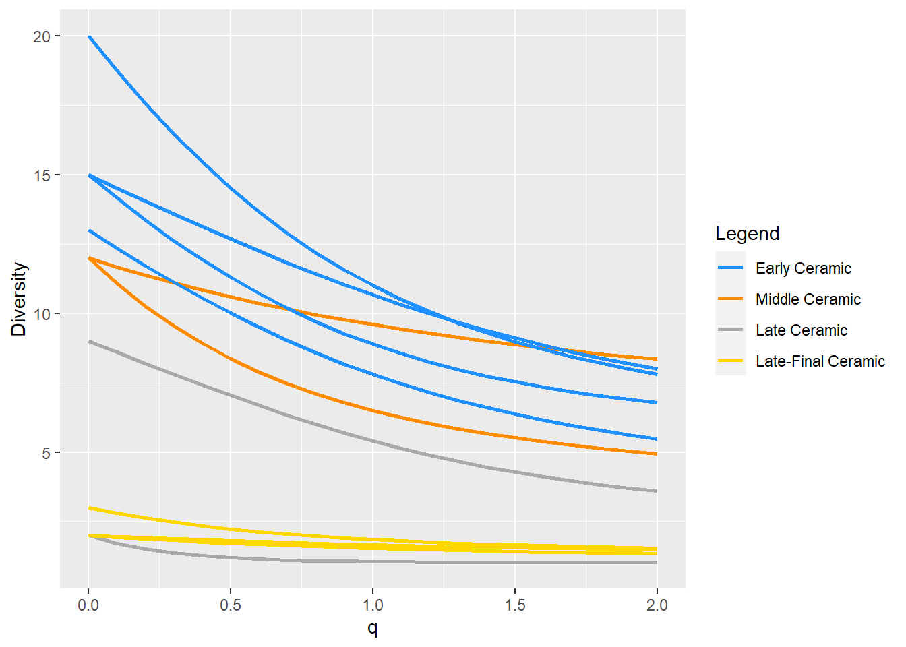
Code
pielou_MP_graph=cbind(Site=row.names(pielou_MP),pielou_MP) %>%
inner_join(data_sites, by = c("Site" = "Site_short"))
# Fixing the order of colors and labels for the legend
pielou_MP_graph$Color <- str_replace_all(pielou_MP_graph$Period, color_periods)
pielou_MP_graph$Period <- factor(pielou_MP_graph$Period, levels=c('Early Ceramic', 'Middle Ceramic', 'Late Ceramic', 'Late-Final Ceramic'))
pielou_MP_graph$Color = factor(pielou_MP_graph$Color, levels=c("dodgerblue", "darkorange", "darkgrey", "gold"))
# Ploting the barplot
plot <- ggplot(pielou_MP_graph, aes(x = reorder(Site,-Pielou_index), y = Pielou_index,fill=Color)) +
geom_bar(stat="identity")+
scale_fill_identity("Legend", labels = levels(as.factor(pielou_MP_graph$Period)),guide = "legend") + xlab("Archaeological site") + ylab("Piélous' index") + guides(x = guide_axis(angle = 45))
plot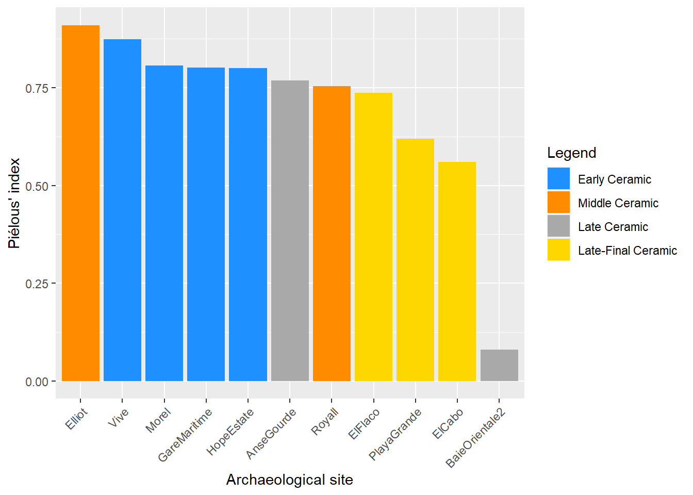
Richness in raw materials of all the sites from the Early Ceramic falls within the possible variability calculated for the number of objects they have delivered, if we randomly drew the same number of objects 10 000 times from the pool composed of all lapidary objects from the 11 sites (Figure 3). They are even situated rather in the high part of the confidence interval, with Hope Estate and Vivé being respectively outside the confidence interval at 80% and 95%. Royall’s, a site from the Middle Ceramic, having delivered a significant number of objects, is well below what would be expected from a random drawing of such a number of objects and therefore shows a rather strong selection of raw materials compared to all available materials. The sites from Late and Final Ceramic are largely below what would be expected if it were a random drawing of this number of objects, except Anse à la Gourde, which shows a comparable wealth to the average of random drawings. The recent sites are therefore very selective in terms of the raw material used, and this is not an artifact linked to the sample size, even for Playa Grande, which is the site that delivered the fewest objects (13). Combining the interpretation of diversity profiles and observed richness compared to numerical simulations makes it possible to distinguish very clearly the Early Ceramic sites in terms of raw material diversity.
Code
div.ggplot(MP,nsim=10000,q.d1=0.80,q.d2=0.95)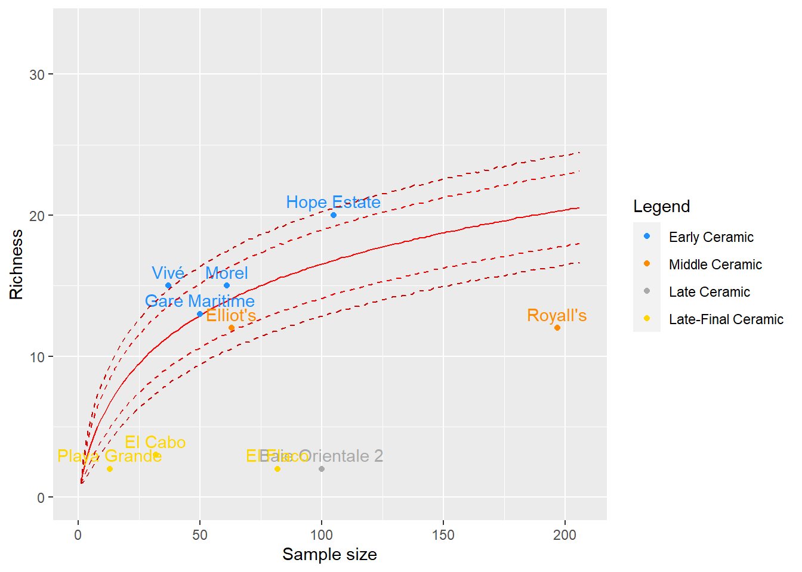
Typological diversity
Similarly to the diversity of raw materials, diversity profiles for types (beads and pendants combined) were calculated (Figure 4). They demonstrate a very marked difference between the sites of the Early Ceramic period and the other sites, with the former having a much higher diversity than the latter. The typological diversity profiles of the Middle Ceramic period sites are here similar to those of the more recent sites, unlike the diversity profiles of raw materials for sites of this same period. However, it is important to note that the typological data are very imperfect for the Middle Ceramic period sites, unfortunately, as mentioned earlier. Regarding the homogeneity of the distribution of bead and pendant types by site (revealed by the Piélou index), a variety of situations without strong limits is observed (Figure 5), except for Baie Orientale 2 whose collection, apart from raw material fragments, consists of 11 cylindrical beads and a single disc-shaped bead. The only chronological particularity belongs to the Final Ceramic period sites in the Dominican Republic, both of which have a very strong evenness index: for these sites, types are evenly represented.
Code
profils_Types = lapply(list_proba_vectors_toustypes,fun_profile)
names(profils_Types) = Sites_Types
Plot_Diversite_Types = as.data.frame(unlist(profils_Types))
colnames(Plot_Diversite_Types) = "Diversity"
Plot_Diversite_Types$Site = str_replace_all(row.names(Plot_Diversite_Types),"[:punct:]","_")
Plot_Diversite_Types$Site = str_split_fixed(Plot_Diversite_Types$Site,"_",2)[,1]
Plot_Diversite_Types$q = q.seq
Plot_Diversite_Types$Period = str_replace_all(Plot_Diversite_Types$Site,c("AnseGourde" = "Late Ceramic", "BaieOrientale2" = "Late Ceramic", "ElCabo" = "Late-Final Ceramic", "ElFlaco" = "Late-Final Ceramic", "PlayaGrande" = "Late-Final Ceramic", "Elliot" = "Middle Ceramic", "Royall" = "Middle Ceramic", "GareMaritime" = "Early Ceramic", "HopeEstate" = "Early Ceramic", "Morel" = "Early Ceramic", "Vive" = "Early Ceramic", "GrandBay" = "Middle Ceramic", "HaciendaGrande" = "Early Ceramic", "LaHueca" = "Early Ceramic", "MainStreet" = "Middle-Late Ceramic", "Pearls" = "Early Ceramic", "Prosperity" = "Early Ceramic", "Sorce" = "Early Ceramic", "Tecla" = "Early Ceramic", "Trants" = "Early Ceramic"))
Plot_Diversite_Types$Color = str_replace_all(Plot_Diversite_Types$Period, color_periods)
Plot_Diversite_Types$Period <- factor(Plot_Diversite_Types$Period, levels=c('Early Ceramic', 'Middle Ceramic','Middle-Late Ceramic', 'Late Ceramic', 'Late-Final Ceramic')) # giving the list of factors in the order I want so that it is in this order in the legend
Plot_Diversite_Types$Color = factor(Plot_Diversite_Types$Color, levels=c("dodgerblue", "darkorange", "mediumblue","darkgrey", "gold")) # giving the list of factors in the order I want so that it is in this order in the legend
ggplot(Plot_Diversite_Types, aes(q,Diversity, colour=Color)) + geom_line(aes(group = Site), size = 1) +
scale_color_identity("Legend", labels = levels(as.factor(Plot_Diversite_Types$Period)),guide = "legend")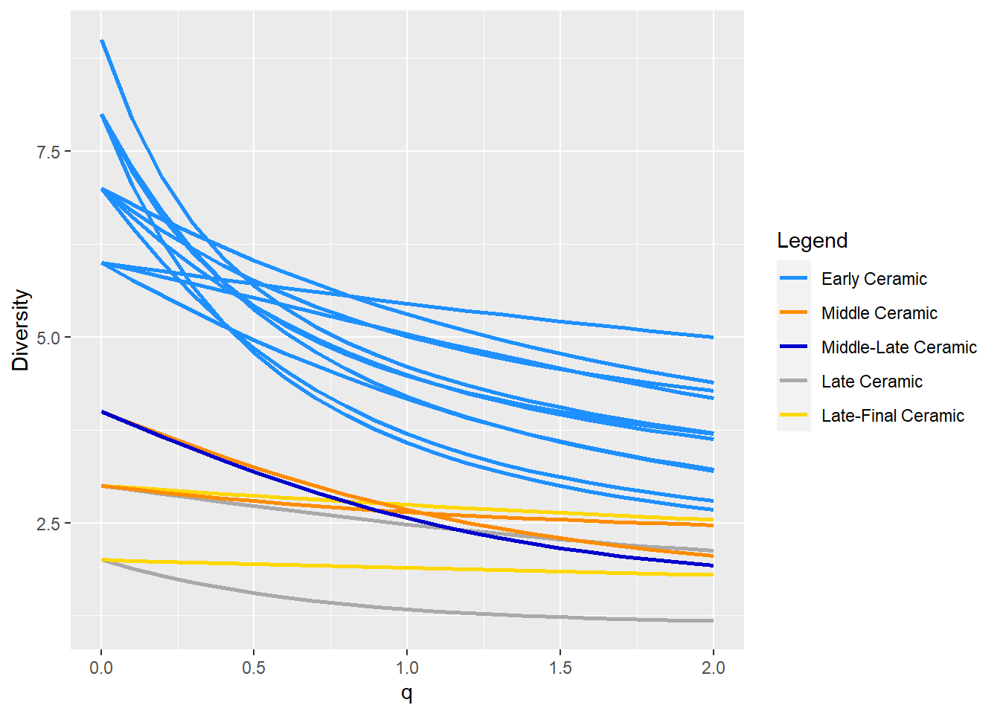
Code
pielou_toustypes_graph=cbind(Site=row.names(pielou_toustypes),pielou_toustypes) %>%
inner_join(data_sites, by = c("Site" = "Site_short"))
pielou_toustypes_graph$Color <- str_replace_all(pielou_toustypes_graph$Period, color_periods)
pielou_toustypes_graph$Period <- factor(pielou_toustypes_graph$Period, levels=c('Early Ceramic', 'Middle Ceramic', 'Middle-Late Ceramic', 'Late Ceramic','Late-Final Ceramic'))
pielou_toustypes_graph$Color = factor(pielou_toustypes_graph$Color, levels=c("dodgerblue", "darkorange","mediumblue", "darkgrey", "gold"))
plot <- ggplot(pielou_toustypes_graph, aes(x = reorder(Site,-Pielou_index), y = Pielou_index,fill=Color)) +
geom_bar(stat="identity")+
scale_fill_identity("Legend", labels = levels(as.factor(pielou_toustypes_graph$Period)),guide = "legend") + xlab("Archaeological site") + ylab("Piélous' index") + guides(x = guide_axis(angle = 45))
plot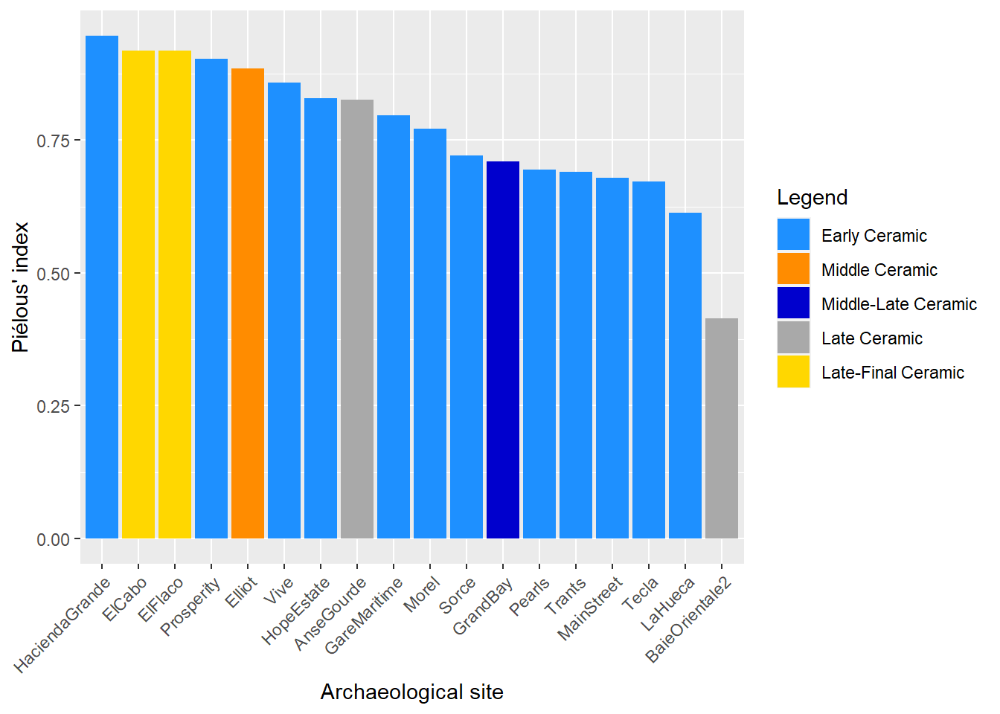
The observed richness of archaeological samples was compared to a model created by merging the 18 sites’ samples into one, and drawing randomly 10 000 times in this pool for each sample size (Figure 6). This figure shows the results when all types are retained (Figure 6 A) and when only major types, the most frequent ones, are retained (meaning excluding faceted beads (one site), spherical beads (n = 6) and anthropozoomorphic pendants (n = 5)) (Figure 6 B). These graphs indicate that sites with high amount of lapidary production (Sorcé, Pearls and La Hueca) do not have a typology based solely on randomness, since they should have a even higher richness that the one they actually show. Their inventory, even is diverse, does not correspond to a simple random draw from a virtual lot of objects created by summing all collections from all represented sites. For sites with smaller sample size, this is also often the case: sites with low richness (2 or 3) are all outside the modeled variability, indicating that they also have a specific choice of bead and pendant types, since a random draw of the number of objects that make up their collection should have created a more diversified collection. Sites with richness between four and seven (except Trants) are within the modeled variability. Their relatively small sample size could be the cause of their lower richness than sites with higher number of artifacts. This interpretation is the same whether all types, even the rarest ones, are retained or when these rare types are excluded. It could indeed have been thought that with such rare types, sites with large sample size would necessarily be below the modeled richness, as the random draw of 2800 objects has a very high chance of containing all types, even the rarest ones. However, when these rare types are excluded, the sites with the highest frequencies remain below the modeled distribution.
Code
library(cowplot)
a = div.ggplot(Types,nsim=10000,q.d1=0.80,q.d2=0.95,nudge.y.value=0.5)
inseta <- div.ggplot200(Types,nsim=10000,q.d1=0.80,q.d2=0.95,nudge.y.value=0.7)
b = div.ggplot(Types_Majeurs,nsim=10000,q.d1=0.80,q.d2=0.95,nudge.y.value=0.5)
insetb = div.ggplot200(Types_Majeurs,nsim=10000,q.d1=0.80,q.d2=0.95,nudge.y.value=0.7)
plot_types = ggdraw(a) + draw_plot(inseta, .20, .08, .55, .45)
plot_types_majeurs = ggdraw(b) + draw_plot(insetb, .20, .08, .55, .45)
plot_grid(plot_types,plot_types_majeurs,nrow=2,align = "v")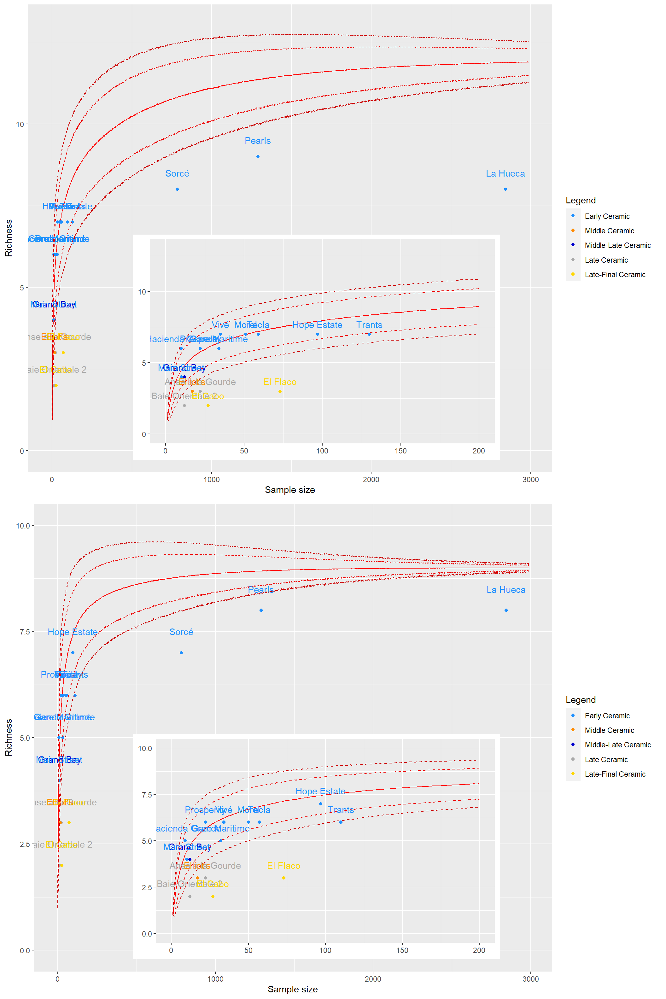
Similarity
Code
#Package for seriations
library(seriation)
library(heatmaply)
library(stringr)
# Packages for Correspondence Analysis
library(FactoMineR)
library(factoextra)
# Packages for network analysis
library(ggraph)
library(tidygraph)
library(ggmap)
library(purrr)
library(dplyr)
library(ggplot2)
library(reshape2)
library(patchwork)
library(igraph)
library(tnet)
library(statnet)
library(dendextend)
#Package for organizing plot
library(cowplot)
#Preparation of color ramp
bgy.ramp = colorRampPalette(c(rgb(0.95,0.95,0.95),rgb(0,0.5,0.5))) # from very light grey to teal
# Data loading
df_rawmaterial <- read.csv(file = "bdd_paaf_rawmaterial.csv", row.names = 1)
df_rawmaterial = df_rawmaterial[,-c(1:8)]
df_greenstone <- read.csv(file = "bdd_paaf_greenstone.csv", row.names = 1)
df_greenstone = df_greenstone[,-c(1:8)]
df_greenturq <- read.csv(file = "bdd_paaf_greenturq.csv", row.names = 1)
df_greenturq = df_greenturq[,-c(1:8)]
#Preparing colors by period
color_periods = c("Early Ceramic" = "dodgerblue",
"Middle-Late Ceramic" = "mediumblue",
"Middle Ceramic" = "darkorange",
"Late Ceramic" = "darkgrey",
"Late-Final Ceramic" = "gold")
color_sites = as.data.frame(row.names(df_rawmaterial))
colnames(color_sites)="Site"
color_sites=inner_join(color_sites,data_sites, by = c("Site" = "Site")) %>%
select(-Site_short, -Index, -Longitude, -Latitude,-Culture)
color_sites$color = str_replace_all(color_sites$Period, color_periods)
# Cerating the function for calculating the Brainerd-Robinson similarity matrix (based on script by M. Peeples)
BRsim.mat <- function(x) {
# get names of sites
names <- row.names(x)
x <- na.omit(x) # remove any rows with missing data
x <- prop.table(as.matrix(x), 1) # convert to row proportions
rd <- dim(x)[1]
# create an empty symmetric matrix of 0s
results <- matrix(0, rd, rd)
# the following dreaded double for loop goes through every cell in the
# output data table and calculates the BR value as described above
for (s1 in 1:rd) {
for (s2 in 1:rd) {
x1Temp <- as.numeric(x[s1, ])
x2Temp <- as.numeric(x[s2, ])
results[s1, s2] <- 2 - (sum(abs(x1Temp - x2Temp)))
}
}
row.names(results) <- names # assign row names to output
colnames(results) <- names # assign column names to output
results <- results/2 # rescale results between 0 and 1
results <- round(results, 3) # round results
return(results)
}
# Applying the function to our data
matrix_simBR = BRsim.mat(df_rawmaterial)
# Data preparation for network analysis
Paaf_bdd <- read.csv(file = "bdd_paaf_rawmaterial.csv",row.names=1)
Paaf_bdd = Paaf_bdd[order(Paaf_bdd$Period),]
Paaf_bdd_C=Paaf_bdd[1:11,] # Keeping only Early Ceramic sites
Paaf_raw = subset(Paaf_bdd, select = Anorthite:Turquoise) # Keeping only gemstones informations
Paaf_raw_C = Paaf_raw[1:11,]
Paaf_greenstone <- read.csv(file = "bdd_paaf_greenstone.csv",row.names=1)
Paaf_greenstone = Paaf_greenstone[order(Paaf_greenstone$Period),]
Paaf_rawgreen = subset(Paaf_greenstone, select = Anorthite:Greenstone)
Paaf_greenstone_C = Paaf_greenstone[1:11,]
Paaf_greenturq <- read.csv(file = "bdd_paaf_greenturq.csv",row.names=1)
Paaf_greenturq = Paaf_greenturq[order(Paaf_greenturq$Period),]
Paaf_rawgreenturq = subset(Paaf_greenturq, select = Anorthite:Greenstone)
Paaf_greenturq_C = Paaf_greenturq[1:11,]
df_typesobjets <- read.csv(file = "bdd_paaf_typesobjets.csv",row.names=1)
df_typesobjets = df_typesobjets[order(df_typesobjets$Period),]
Paaf_typesobjets = subset(df_typesobjets, select = Bead:Earplug)
Paaf_typesobjets_C = Paaf_typesobjets[1:14,]
df_typesobjets_C = df_typesobjets[1:14,]
df_toustypes <- read.csv(file = "bdd_paaf_toustypes.csv",row.names=1)
df_toustypes = df_toustypes[order(df_toustypes$Period),]
Paaf_toustypes = subset(df_toustypes, select = Anthropomorphic:Zoomorphic)
Paaf_toustypes_C = Paaf_toustypes[1:12,]
df_toustypes_C = df_toustypes[1:12,]
df_typesperles <- read.csv(file = "bdd_paaf_typesperles.csv",row.names=1)
df_typesperles = df_typesperles[order(df_typesperles$Period),]
Paaf_typesperles = subset(df_typesperles, select = Biconical:Barrel)
Paaf_typesperles_C = Paaf_typesperles[1:10,]
df_typesperles_C = df_typesperles[1:10,]
#Number of artifacts per site for all combinations type-raw material
df_typerawsites <- read.csv(file = "bdd_paaf_rawtyposites.csv",row.names=1)
df_typerawsites = df_typerawsites[order(df_typerawsites$Period),]
Paaf_typerawsites = subset(df_typerawsites,
select = Amethyst.Biconical:Turquoise.Zoomorphic)
Paaf_typerawsites_C = Paaf_typerawsites[1:9,]
df_typerawsites_C = df_typerawsites[1:9,]
# Creation function to create Brainerd-Robinson matrix
BR.sim <- function(x) {
# get names of sites
names <- row.names(x)
x <- na.omit(x) # remove any rows with missing data
x <- prop.table(as.matrix(x), 1) # convert to row proportions
rd <- dim(x)[1]
# create an empty symmetric matrix of 0s
results <- matrix(0, rd, rd)
# the following dreaded double for loop goes through every cell in the
# output data table and calculates the BR value as described above
for (s1 in 1:rd) {
for (s2 in 1:rd) {
x1Temp <- as.numeric(x[s1, ])
x2Temp <- as.numeric(x[s2, ])
results[s1, s2] <- 2 - (sum(abs(x1Temp - x2Temp)))
}
}
row.names(results) <- names # assign row names to output
colnames(results) <- names # assign column names to output
results <- results/2 # rescale results between 0 and 1
results <- round(results, 3) # round results
return(results)
}
# Calculating centrality values for weigthed networks (edges between sites have a weight).
net.stats.wt <- function(y) {
# calculate weighted degree as the sum of weights - 1
dg.wt <- as.matrix(rowSums(y) - 1)
# calculate weighted eigenvector centrality and rescale
eg.wt <- as.matrix(sna::evcent(y))
eg.wt <- sqrt((eg.wt^2) * length(eg.wt))
# calculate weighted betweenness from the tnet package (we use the
# suppressWarnings package to avoid notifications)
bw.wt <- suppressWarnings(tnet::betweenness_w(y, directed = F))[, 2]
output <- cbind(dg.wt, eg.wt, bw.wt)
rownames(output) <- rownames(as.matrix(y))
colnames(output) <- c("degree.wt", "eigen.wt", "between.wt")
return(output)
}
# Function to get the threshold to keep a single and complete network with all sites.
thresh = function(similarity_matrix)
min(sapply(as.data.frame(x= similarity_matrix),sort)[nrow(similarity_matrix)-1,])
# Function to create muliple graphs from a list
plot_a_list <- function(master_list_with_plots, no_of_rows, no_of_cols) {
patchwork::wrap_plots(master_list_with_plots,
nrow = no_of_rows, ncol = no_of_cols)
}
# Applying the functions to our data
Paaf_raw_BR <- BR.sim(Paaf_raw)
Paaf_raw_BR_sup <- BR.sim(Paaf_raw)
Paaf_raw_BR_sup[upper.tri(Paaf_raw_BR_sup)] = 0
Paaf_raw_BR_C <- BR.sim(Paaf_raw_C)
Paaf_raw_BR_C_sup <- BR.sim(Paaf_raw_C)
Paaf_raw_BR_C_sup[upper.tri(Paaf_raw_BR_C_sup)] = NA
Paaf_rawgreen_BR <- BR.sim(Paaf_rawgreen)
Paaf_rawgreen_BR_sup <- BR.sim(Paaf_rawgreen)
Paaf_rawgreen_BR_sup[upper.tri(Paaf_rawgreen_BR_sup)] = 0
Paaf_rawgreen_BR_C <- BR.sim(Paaf_rawgreen[1:11,])
Paaf_rawgreen_BR_C_sup <- BR.sim(Paaf_rawgreen[1:11,])
Paaf_rawgreen_BR_C_sup[upper.tri(Paaf_rawgreen_BR_C_sup)] = 0
Paaf_rawgreenturq_BR <- BR.sim(Paaf_rawgreenturq)
Paaf_rawgreenturq_BR_sup <- BR.sim(Paaf_rawgreenturq)
Paaf_rawgreenturq_BR_sup[upper.tri(Paaf_rawgreenturq_BR_sup)] = 0
Paaf_rawgreenturq_BR_C <- BR.sim(Paaf_rawgreenturq[1:11,])
Paaf_rawgreenturq_BR_C_sup <- BR.sim(Paaf_rawgreenturq[1:11,])
Paaf_rawgreenturq_BR_C_sup[upper.tri(Paaf_rawgreenturq_BR_C_sup)] = 0
Paaf_typesobjets_BR <- BR.sim(Paaf_typesobjets)
Paaf_typesobjets_BR_sup <- BR.sim(Paaf_typesobjets)
Paaf_typesobjets_BR_sup[upper.tri(Paaf_typesobjets_BR_sup)] = 0
Paaf_typesobjets_BR_C <- BR.sim(Paaf_typesobjets[1:14,])
Paaf_typesobjets_BR_C_sup <- BR.sim(Paaf_typesobjets[1:14,])
Paaf_typesobjets_BR_C_sup[upper.tri(Paaf_typesobjets_BR_C_sup)] = 0
Paaf_toustypes_BR <- BR.sim(Paaf_toustypes)
Paaf_toustypes_BR_sup <- BR.sim(Paaf_toustypes)
Paaf_toustypes_BR_sup[upper.tri(Paaf_toustypes_BR_sup)] = 0
Paaf_toustypes_BR_C <- BR.sim(Paaf_toustypes[1:12,])
Paaf_toustypes_BR_C_sup <- BR.sim(Paaf_toustypes[1:12,])
Paaf_toustypes_BR_C_sup[upper.tri(Paaf_toustypes_BR_C_sup)] = 0
Paaf_typesperles_BR <- BR.sim(Paaf_typesperles)
Paaf_typesperles_BR_sup <- BR.sim(Paaf_typesperles)
Paaf_typesperles_BR_sup[upper.tri(Paaf_typesperles_BR_sup)] = 0
Paaf_typesperles_BR_C <- BR.sim(Paaf_typesperles[1:10,])
Paaf_typesperles_BR_C_sup <- BR.sim(Paaf_typesperles[1:10,])
Paaf_typesperles_BR_C_sup[upper.tri(Paaf_typesperles_BR_C_sup)] = 0
Paaf_typerawsites_BR <- BR.sim(Paaf_typerawsites)
Paaf_typerawsites_BR_sup <- BR.sim(Paaf_typerawsites)
Paaf_typerawsites_BR_sup[upper.tri(Paaf_typerawsites_BR_sup)] = 0
Paaf_typerawsites_BR_C <- BR.sim(Paaf_typerawsites[1:9,])
Paaf_typerawsites_BR_C_sup <- BR.sim(Paaf_typerawsites[1:9])
Paaf_typerawsites_BR_C_sup[upper.tri(Paaf_typerawsites_BR_C_sup)] = 0Raw material similarity
Seriation (centered data, Euclidean distance, OLO algorithm) of sites and individualized raw materials highlights four groups of sites (Figure 7). Huecan Saladoid sites (Punta Candelero, La Hueca, Gare Maritime and Sorcé, the site neighbouring La Hueca) are grouped due to their high serpentine content. A second group stands out, based on the significant presence of calcite, including sites from the Late Ceramic (Anse à la Gourde, Baie Orientale 2, Grand Case) and Final Ceramic (El Flaco) periods, and with a weaker similarity, Hope Estate (Early Ceramic) and Royall’s (Middle Ceramic). A third group corresponds to Early Ceramic and Middle Ceramic sites rich in rock crystal and presenting a diversity of materials such as nephrite, amethyst, diorite, etc. Finally, a group with significant proportions of diorite and, to a lesser extent, carnelian, is highlighted. It includes sites from several periods, such as the Early Ceramic (Trants), but especially recent and final sites (Golden Grove, which is a diorite bead production workshop, El Cabo, Playa Grande). In this group, but relatively distant from the others, is the site of Vivé, which, while indeed presenting several objects in diorite and carnelian, also stands out for a high proportion of turquoise and amethyst.
In order to eliminate a potential bias created by the sites studied in more detail from a gemological perspective (the sites of Antigua and those of the French islands), and also to perhaps get closer to the Amerindian view of these materials who did not have the analytical means to distinguish all green rocks, nor maybe the need or desire to do so, I attempted two different groupings for the green rocks. First, I considered that turquoise could be left aside, due to its relatively easy recognition for non-gemologist archaeologists, as well as potentially by Amerindians (Figure 8). I also grouped all green rocks together (Figure 9). Similar groupings can be observed in both figures: a diorite (+carnelian) group including sites from different periods, a calcite-oriented group mainly comprising recent sites, a diversified group (rock crystal + amethyst + turquoise + green rocks) including ancient sites, and finally a group heavily oriented towards green rocks including Early Ceramic sites in which the Huecan Saladoid sites are even more strongly grouped.
Code
library(heatmaply)
hmap_rawmaterial = heatmaply(df_rawmaterial,
scale = "row", #scaling of values to compare quite different samples
col = bgy.ramp(100), #use of teal color
seriate = "OLO", #ordering of the leaves
RowSideColors = color_sites$color, #adding the color bars for Periods
key.title = "Similarity",
cexCol = 0.9)
#hmap_rawmaterial[["x"]][["layout"]][["annotations"]][[1]][["text"]]="" #removing a word above the row denderogram
hmap_rawmaterial[["x"]][["layout"]][["xaxis2"]][["ticktext"]]="Period"
hmap_rawmaterialCode
#changing the automatic name to Period below the color bars
#export(p = hmap_rawmaterial,file = "hmap_rawmaterial.png")
#only solution I found to put the graph in the pdf is to export it before, because the heatmaply function creates a plotly object and not a ggplot object, and plotly object are only suitable for html renderingCode
hmap_greenturq = heatmaply(df_greenturq,
scale = "row", #scaling of values to compare quite different samples
col = bgy.ramp(100), #use of teal color
seriate = "OLO", #ordering of the leaves
RowSideColors = color_sites$color, #adding the color bars for Periods
key.title = "Similarity",
cexCol = 0.9)
#hmap_greenturq[["x"]][["layout"]][["annotations"]][[1]][["text"]]="" #removing a word above the row denderogram
hmap_greenturq[["x"]][["layout"]][["xaxis2"]][["ticktext"]]="Period" #changing the automatic name to Period below the color bars
hmap_greenturqCode
#export(p = hmap_greenturq,file = "hmap_greenturq.png") #only solution I found to put the graph in the pdf is to export it before, because the heatmaply function creates a plotly object and not a ggplot object, and plotly object are only suitable for html renderingCode
hmap_greenstone = heatmaply(df_greenstone,
scale = "row", #scaling of values to compare quite different samples
col = bgy.ramp(100), #use of teal color
seriate = "OLO", #ordering of the leaves
RowSideColors = color_sites$color, #adding the color bars for Periods
key.title = "Similarity",
cexCol = 0.9)
#hmap_greenstone[["x"]][["layout"]][["annotations"]][[1]][["text"]]="" #removing a word above the row denderogram
hmap_greenstone[["x"]][["layout"]][["xaxis2"]][["ticktext"]]="Period" #changing the automatic name to Period below the color bars
hmap_greenstoneCode
#export(p = hmap_greenstone,file = "hmap_greenstone.png") #only solution I found to put the graph in the pdf is to export it before, because the heatmaply function creates a plotly object and not a ggplot object, and plotly object are only suitable for html renderingAnother way of representing the affinities between sites and raw materials is Correspondence Analysis. Figure 10 shows the first three dimensions of this analysis. The first dimension clearly corresponds to the opposition between sites rich in greenstones (especially serpentine) and other minerals, with a cluster of ancient sites including the Huecan Saladoid sites on the left of the graph, and more recent sites on the right side. The second dimension distinguishes sites rich in calcite from those rich in diorite, as already observed in the seriations. The third dimension mainly incorporates the variance in crystal quartz proportion. By keeping only dimensions 1 and 3 (Figure 10), this analysis separates the sites extremely effectively based on their period. The results obtained by the Correspondence Analysis largely confirm the results of the seriations, highlighting the robustness of this quantitative methodology.
Code
color_periods = c("Early Ceramic" = "dodgerblue",
"Middle-Late Ceramic" = "mediumblue",
"Middle Ceramic" = "darkorange",
"Late Ceramic" = "darkgrey",
"Late-Final Ceramic" = "gold")
color_sites = as.data.frame(row.names(df_rawmaterial))
colnames(color_sites)="Site"
color_sites=inner_join(color_sites,data_sites, by = c("Site" = "Site")) %>%
select(-Site_short, -Index, -Longitude, -Latitude,-Culture)
color_sites$Color = str_replace_all(color_sites$Period, color_periods)
df_rawmaterialCA=cbind(df_rawmaterial,color_sites)
df_rawmaterialCA$Period <- factor(df_rawmaterialCA$Period, levels=c('Early Ceramic', 'Middle Ceramic','Middle-Late Ceramic', 'Late Ceramic', 'Late-Final Ceramic'))
df_rawmaterialCA$Color = factor(df_rawmaterialCA$Color, levels=c("dodgerblue", "darkorange","mediumblue", "darkgrey", "gold"))
ca_MP = CA(df_rawmaterialCA[,1:18],graph = F)
dim1_2 = fviz_ca_biplot(ca_MP, axes = c(1, 2), graph.type = "ggplot", invisible="quali", labelsize = 2,repel = T,col.row=df_rawmaterialCA$Color, palette = df_rawmaterialCA$Color) + scale_color_identity("Period", labels = levels(as.factor(df_rawmaterialCA$Period)),guide = "legend") + theme(legend.position = "none")
dim1_3 = fviz_ca_biplot(ca_MP, axes = c(1, 3), graph.type = "ggplot", invisible="quali", labelsize = 2,repel = T,col.row=df_rawmaterialCA$Color, palette = df_rawmaterialCA$Color) + scale_color_identity("Period", labels = levels(as.factor(df_rawmaterialCA$Period)),guide = "legend") + theme(legend.position="bottom",
legend.margin=margin(c(0,0,0,0)),legend.key.width = unit(0.2, "cm"))+ guides(color = guide_legend(nrow = 2, byrow = TRUE))
legend_CA = cowplot::get_legend(dim1_3)
dim1_2[["labels"]][["colour"]] = "Period"
dim1_3[["labels"]][["colour"]] = "Period"
#plot_grid(dim1_2,dim1_3 + theme(legend.position = "none"),legend_CA,rel_widths = c(1,1,0.5),nrow =1, labels = c("A","B"),align = 'v')
p1 = plot_grid(dim1_2,dim1_3 + theme(legend.position = "none"),nrow =1, labels = c("A","B"))
legend = legend_CA
plot_grid(p1,legend,ncol=1,rel_heights = c(1,0.2))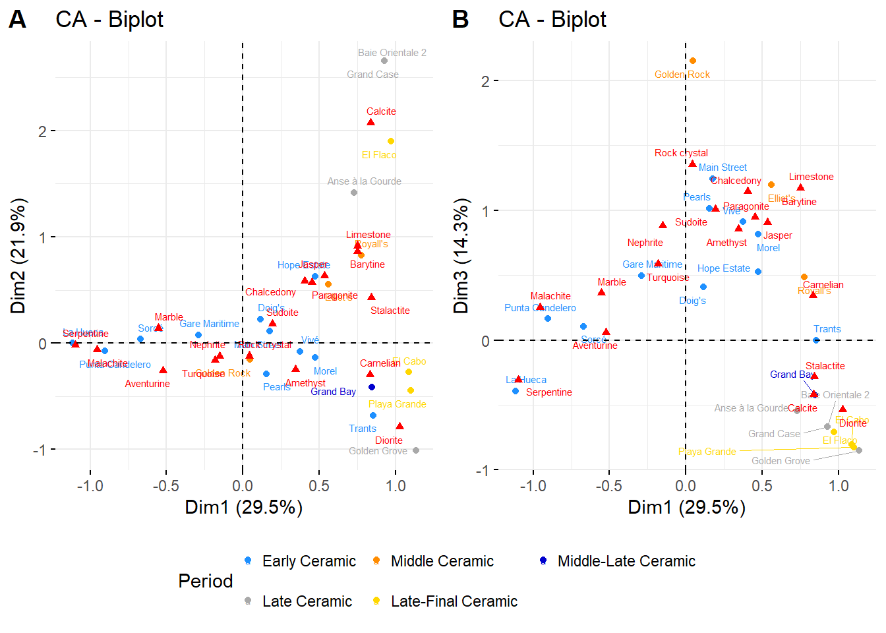
Rather than Euclidean distance, archaeologists often use the Brainerd-Robinson distance, to assess the similarity between archaeological collections from different sites. On the heatmap created from this similarity matrix (Figure 11), the color of the cell at the intersection of two sites a and b corresponds to this similarity value, and the seriation orders the sites to bring the most similar sites closer together. One can immediately notice the grouping of recent sites at the bottom right of the graph, especially the sites rich in calcite that form a compact group. The recent sites rich in diorite deviate slightly and are located close to the older sites that have yielded several diorite beads. The heart of the graph groups diversified Cedrosan Saladoid sites, and as we move up towards the top right, a group of Huecan Saladoid sites stand out, just before the Golden Rock site. Golden Rock can be considered an outlier due to the uniqueness of the rock crystal as the gemstone used to produce a necklace found in a burial. The nine possible combinations of the three data precisions (all distinct raw materials, green rocks grouped except for turquoise, all green rocks grouped) and the three seriation algorithms (Heatmap, PCA, PCA-Angle) have been tested, with very few variations.
Code
hmapsimBR = heatmaply(matrix_simBR,
#scale = "row", #scaling of values to compare quite different samples
col = bgy.ramp(100), #use of teal color
seriate = "OLO", #ordering of the leaves
RowSideColors = color_sites$color, #adding the color bars for Periods
ColSideColors = color_sites$color,
key.title = "Brainerd-Robinson \n similarity",
show_dendrogram = c(FALSE, FALSE),
cexCol = 1)
#hmapsimBR[["x"]][["layout"]][["annotations"]][[1]][["text"]]="" #removing a word above the row dendrogram
#hmapsimBR[["x"]][["layout"]][["annotations"]][[2]][["text"]]=""
hmapsimBR[["x"]][["layout"]][["xaxis2"]][["ticktext"]]="Period" #changing the automatic name to Period below the color bars
hmapsimBR[["x"]][["layout"]][["yaxis"]][["ticktext"]]="Period" #changing the automatic name to Period below the color bars
hmapsimBR[["x"]][["layout"]][["showlegend"]] = FALSE
hmapsimBRCode
#export(p = hmapsimBR,file = "hmapsimBR.png")The exploration of network analysis results can be made difficult by the entanglement of too many links between nodes or the overlap of nodes. Several methods exist to represent such networks (Henry and Fekete 2008), and one of them corresponds to the representation by clusters or matrices. Here, to maintain the node/link representation type, thresholds are applied to the list of links between sites to keep only links with a similarity greater than or equal to the chosen threshold. Figure 12 thus represents the network of archaeological sites when the threshold is set to remove the maximum number of links between sites while maintaining a single, fully connected network, meaning that all sites are linked in a single network. It can be observed that the strongest similarities are between recent period sites, namely between Playa Grande and El Cabo for the Late-Final Ceramic and Baie Orientale 2 and Grand Case for the Late Ceramic. Two groups of recent sites are linked to the group of ancient and Middle Ceramic sites through Hope Estate for the group of sites rich in calcite, and through Trants for sites rich in diorite and carnelian, forming a system similar to that already observed. It should also be noted that there is a specific group of Early Ceramic sites at the top of the figure, which includes sites attributed to the Huecan Saladoid and Sorcé, the neighboring site of La Hueca on the island of Vieques. These sites are connected to sites attributed to the Cedrosan Saladoid through the Guadeloupean site of Gare Maritime. Finally, the Middle Ceramic sites are located as interface between recent sites rich in diorite and Cedrosan Saladoid sites. The Grand Bay site, attributed to Middle-Late Ceramic without being able to distinguish the origin of the lapidary objects more precisely in this multicomponent site, is here clearly located in one of the Post-Saladoid groups. The choice of the threshold used to represent the network being arbitrary, as interesting as the threshold that allows at least one link per site may be, it is important to observe the networks formed with other thresholds (Peeples and Roberts 2013). With the lowest threshold represented here, 0.3, it can be seen that the Late and Final Ceramic sites form a single set with very strong similarities. The color scale of the links, as well as the thickness scale of the links, representing a wider range of values, allow for better differentiation between groups. Thus, recent sites, which have much less diversity than older sites, can show much stronger similarities because they only involve two or three raw materials. The heart of the network, formed by Cedrosan Saladoid sites, has many more connections (which places it at the center via the node positioning algorithm), but the links are weaker, as the raw materials are more diverse, making it difficult to achieve very high similarities. From a threshold of 0.4, the two groups within the recent sites are distinguished, and the network strongly resembles the network described previously for a threshold of 0.461. At a threshold of 0.462 (not shown here), the network is no longer complete, and of course, the Golden Rock site is the first to be removed from the network. At a threshold of 0.5, the groups of recent sites are also separated from the Early and Middle Ceramic sites, clearly indicating that this is where the chronological and possibly cultural limit lies if one wishes to dichotomize Ceramic Age lapidary.
Code
# Calculating the threshold to keep a single and complete network.
Tmin = thresh(Paaf_raw_BR)
# Preparation of Paaf_bdd for colors and legend in the right order.
Paaf_bdd$Subserie <- str_replace_all(Paaf_bdd$Period, color_periods)
Paaf_bdd = rename(Paaf_bdd,Color = Subserie)
Paaf_bdd$Period <- factor(Paaf_bdd$Period, levels=c('Early Ceramic', 'Middle Ceramic','Middle-Late Ceramic', 'Late Ceramic', 'Late-Final Ceramic'))
Paaf_bdd$Color = factor(Paaf_bdd$Color, levels=c("dodgerblue", "darkorange","mediumblue", "darkgrey", "gold"))
# Calculating the network with the threshold
edges <- melt(Paaf_raw_BR) %>%
rename(Site1 = Var1, Site2 = Var2, Similarity = value) %>%
filter(Similarity>=Tmin)
g = graph_from_data_frame(edges,directed = FALSE,vertices = cbind(row.names(Paaf_bdd),Paaf_bdd[,1:5]))
# Ploting the network
big_plot = ggraph(g, layout = "kk") +
geom_edge_link(aes(colour = Similarity,edge_width = Similarity)) +
scale_edge_width_continuous(range = c(1, 3),guide = "none") +
scale_edge_colour_gradient(low = "#fafafa",high = "#008080") +
geom_node_point(aes(color=Paaf_bdd$Color),shape = 19,stroke = 0.5) +
scale_color_identity("Legend", labels = levels(as.factor(Paaf_bdd$Period)),guide = "legend") +
geom_node_text(aes(label = name), repel = TRUE, size = 3,
color = "black", fontface = "bold")+
theme(panel.background = element_rect(fill = "grey90", colour = "grey80"))
# Same thing for 4 different thresholds, put in a list.
number_list = c(1,2,3,4)
thresholds_BR = c(0.3,0.4,0.5,0.6) # list of thresholds
my_list_BR = list()
for (T in number_list) {
edges = melt(Paaf_raw_BR) %>%
rename(Site1 = Var1, Site2 = Var2, Similarity = value) %>%
filter(Similarity>=thresholds_BR[T])
g = graph_from_data_frame(edges,directed = FALSE,vertices = cbind(row.names(Paaf_bdd),Paaf_bdd[,1:5]))
my_list_BR[[T]] =
ggraph(g, layout = "kk") +
geom_edge_link(aes(colour = Similarity,edge_width = Similarity)) +
scale_edge_width_continuous(range = c(1, 3),guide = "none") +
scale_edge_colour_gradient(low = "#fafafa",high = "#008080") +
geom_node_point(aes(color=Paaf_bdd$Color), shape = 19,size = 3,stroke = 0.5,show.legend = F) +
scale_color_identity("Legend", labels = levels(as.factor(Paaf_bdd$Period)),guide = "none") +
geom_node_text(aes(label = name), repel = TRUE, size = 3,
color = "black", fontface = "bold") +
theme(panel.background = element_rect(fill = "white", colour = "grey50")) +
ggtitle(paste0(" Threshold ",thresholds_BR[T]))
}
row1 = plot_grid(big_plot,labels = "A")
row2 = plot_grid(my_list_BR[[1]], my_list_BR[[2]],labels = c("B","C"))
row3 = plot_grid(my_list_BR[[3]], my_list_BR[[4]],labels = c("D","E"))
plot_grid(row1,row2,row3,nrow=3)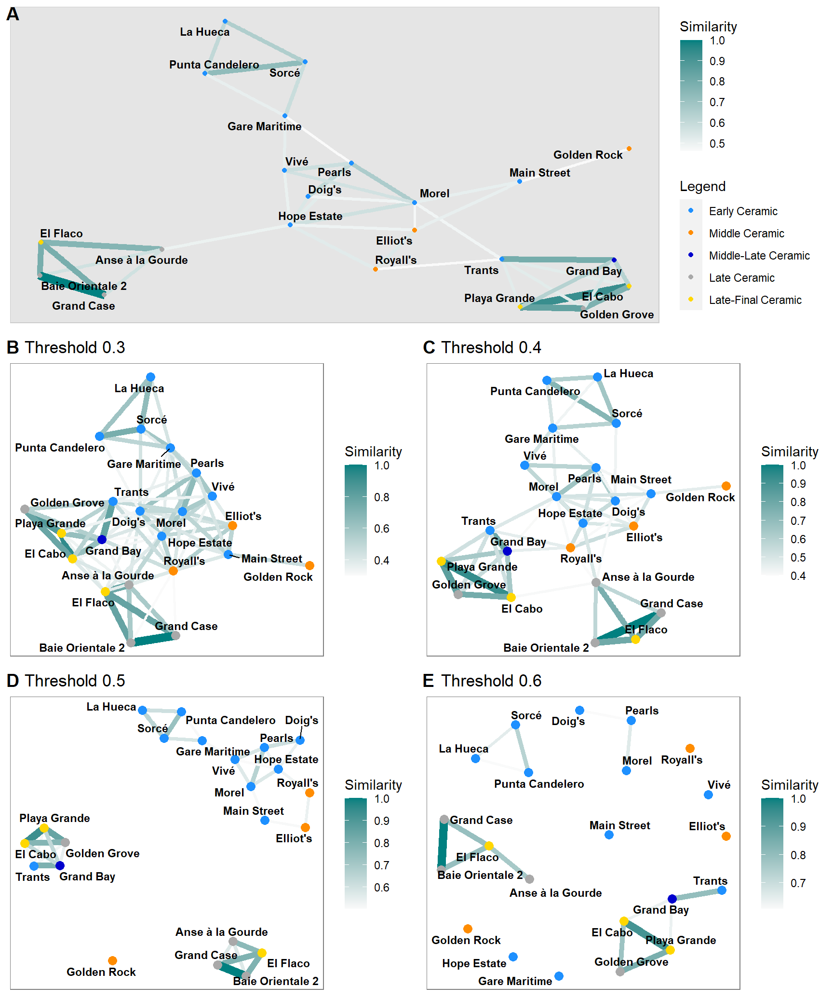
For the Early Ceramic period, the period represented by the most numerous sites, it is possible to calculate the network and the various centrality values for the nodes (Figure 13). This network and the centrality values were calculated and represented with the threshold allowing to maintain a unique and complete network, and for detailed raw materials (Figure 13 A, B, and C) or greenstones grouped but turquoise (Figure 13 D, E, and F). It can be observed that the site of Morel has the highest degree, meaning that it has the most links with other sites, especially due to its position as a connector between two more peripheral sites, Trants and Main Street, and the rest of the Cedrosan Saladoid sites (Figure 13 A). If we look at the inventory of these three sites, it is the relatively high content of rock crystal and carnelian at Morel that ensures this connection with Trants and Main Street. Apart from these two more peripheral sites, the differences between sites in terms of centrality degree are not very pronounced, and they are even less so when the specificity of mineralogical characterization of the studied sites in the French islands is largely eliminated by grouping green rocks together (Figure 13 D). This specificity of sites whose materials have been characterized in the finest detail is even more visible with regard to betweenness (Figure 13 B), where three sites are visibly more central than the others: Morel, which makes this connection with the two aforementioned sites, as well as Vivé and Gare Maritime, which are the sites connecting the Cedrosan Saladoid sites and the Huecan Saladoid sites (+ Sorcé). When green minerals are grouped together, except for turquoise, which is considered relatively easy to identify with the naked eye and without being a gemologist, the Morel site retains an important position in the network, but the Pearls site becomes the site with the highest betweenness (Figure 13 E). Sites with high betweenness are often called “hubs” and can have an important influence on the network, whether in terms of exchanges of goods or information, depending on the reasons for the existence of the network. Finally, when eigenvector centrality is used to represent the size of the network nodes, one can observe the importance of a node in the entire network, rather than only in relation to those with whom it is directly linked (Peeples and Roberts 2013). It can then be noted that the 5 highly interconnected sites of the Cedrosan Saladoid (Morel, Doig’s, Pearls, Hope Estate and Vivé) are of paramount importance in this Early Ceramic network, unlike the peripheral sites, Trants and Main Street, as well as the trio of the Huecan subs-series completed by the Sorcé site, if the maximum degree of precision regarding raw materials is maintained (Figure 13 C). However, when green materials are grouped together, no site stands out clearly in the network as better connected than the others (Figure 13 F). What is most striking is the low connectivity of Trants, which, only connected to the Morel site thanks to its relatively high content of diorite, seems to be very poorly connected to this network of Early Ceramic sites in terms of raw materials. Unfortunately, more recent periods than the Early Ceramic period do not allow for this type of analysis, as they have too few sites.
Code
# Calculate the network and the centrality of nodes for the Early Ceramic period, with detailed raw materials:
T = thresh(Paaf_raw_BR_C)
edges = melt(Paaf_raw_BR_C_sup) %>%
rename(Site1 = Var1, Site2 = Var2, Similarity = value) %>%
filter(Similarity>=T)
g = graph_from_data_frame(edges,directed = FALSE,vertices = cbind(row.names(Paaf_bdd_C),Paaf_bdd_C[,1:5]))
# Calculating centrality values for nodes in a weighted network
Paaf_raw_BR_C_thresh = Paaf_raw_BR_C
Paaf_raw_BR_C_thresh[Paaf_raw_BR_C_thresh < T] <- 0
stats.wt_thresh = net.stats.wt(Paaf_raw_BR_C_thresh)
graph1 = ggraph(g, layout = "kk") +
geom_edge_link(aes(colour = Similarity,edge_width = Similarity)) +
scale_edge_width_continuous(range = c(1, 3),guide = "none") +
scale_edge_colour_gradient(low = "#fafafa",high = "#008080") +
geom_node_point(aes(), shape = 19,
size = stats.wt_thresh[,1]*3, #Choice of centrality index, here Degree
stroke = 0.5,
color = "dodgerblue") +
scale_size_continuous(range = c(1,6)) +
geom_node_text(aes(label = name), repel = TRUE, size = 3,
color = "black", fontface = "bold") +
theme(panel.background = element_rect(fill = "white", colour = "grey50")) +
ggtitle(paste0(" Threshold set to ",T,". Degree"))
graph2 = ggraph(g, layout = "kk") +
geom_edge_link(aes(colour = Similarity,edge_width = Similarity)) +
scale_edge_width_continuous(range = c(1, 3),guide = "none") +
scale_edge_colour_gradient(low = "#fafafa",high = "#008080") +
geom_node_point(aes(), shape = 19,
size = stats.wt_thresh[,3]*0.5, #Choice of centrality index, here Betweenness
stroke = 0.5,
color = "dodgerblue") +
scale_size_continuous(range = c(1,6)) +
geom_node_text(aes(label = name), repel = TRUE, size = 3,
color = "black", fontface = "bold") +
theme(panel.background = element_rect(fill = "white", colour = "grey50")) +
ggtitle(paste0(" Threshold set to ",T,". Betweenness"))
graph3 = ggraph(g, layout = "kk") +
geom_edge_link(aes(colour = Similarity,edge_width = Similarity)) +
scale_edge_width_continuous(range = c(1, 3),guide = "none") +
scale_edge_colour_gradient(low = "#fafafa",high = "#008080") +
geom_node_point(aes(), shape = 19,
size = stats.wt_thresh[,2], #Choice of centrality index, here Eigenvectors
stroke = 0.5,
color = "dodgerblue") +
scale_size_continuous(range = c(1,6)) +
geom_node_text(aes(label = name), repel = TRUE, size = 3,
color = "black", fontface = "bold") +
theme(panel.background = element_rect(fill = "white", colour = "grey50")) +
ggtitle(paste0(" Threshold set to ",T,". Eigenvectors"))
### Same calculation for the greenstones grouped but turquoise ###
Trgt = thresh(Paaf_rawgreenturq_BR_C)
edges = melt(Paaf_rawgreenturq_BR_C_sup) %>%
rename(Site1 = Var1, Site2 = Var2, Similarity = value) %>%
filter(Similarity>=Trgt)
g = graph_from_data_frame(edges,directed = FALSE,vertices = cbind(row.names(Paaf_bdd_C),Paaf_bdd_C[,1:5]))
# Calculating centrality values for nodes in a weighted network
Paaf_rawgreenturq_BR_C_thresh = Paaf_rawgreenturq_BR_C
Paaf_rawgreenturq_BR_C_thresh[Paaf_rawgreenturq_BR_C_thresh < Trgt] <- 0
stats.wt_thresh = net.stats.wt(Paaf_rawgreenturq_BR_C_thresh)
graph4 = ggraph(g, layout = "kk") +
geom_edge_link(aes(colour = Similarity,edge_width = Similarity)) +
scale_edge_width_continuous(range = c(1, 3),guide = "none") +
scale_edge_colour_gradient(low = "#fafafa",high = "#008080") +
geom_node_point(aes(), shape = 19,
size = stats.wt_thresh[,1]*3, #Choice of centrality index, here Degree
stroke = 0.5,
color = "dodgerblue") +
scale_size_continuous(range = c(1,6)) +
geom_node_text(aes(label = name), repel = TRUE, size = 3,
color = "black", fontface = "bold") +
theme(panel.background = element_rect(fill = "white", colour = "grey50")) +
ggtitle(paste0(" Threshold set to ",Trgt,". Degree"))
graph5 = ggraph(g, layout = "kk") +
geom_edge_link(aes(colour = Similarity,edge_width = Similarity)) +
scale_edge_width_continuous(range = c(1, 3),guide = "none") +
scale_edge_colour_gradient(low = "#fafafa",high = "#008080") +
geom_node_point(aes(), shape = 19,
size = stats.wt_thresh[,3]*0.5, #Choice of centrality index, here Betweenness
stroke = 0.5,
color = "dodgerblue") +
scale_size_continuous(range = c(1,6)) +
geom_node_text(aes(label = name), repel = TRUE, size = 3,
color = "black", fontface = "bold") +
theme(panel.background = element_rect(fill = "white", colour = "grey50")) +
ggtitle(paste0(" Threshold set to ",Trgt,". Betweenness"))
graph6 = ggraph(g, layout = "kk") +
geom_edge_link(aes(colour = Similarity,edge_width = Similarity)) +
scale_edge_width_continuous(range = c(1, 3),guide = "none") +
scale_edge_colour_gradient(low = "#fafafa",high = "#008080") +
geom_node_point(aes(), shape = 19,
size = stats.wt_thresh[,2], #Choice of centrality index, here Eigenvectors
stroke = 0.5,
color = "dodgerblue") +
scale_size_continuous(range = c(1,6)) +
geom_node_text(aes(label = name), repel = TRUE, size = 3,
color = "black", fontface = "bold") +
theme(panel.background = element_rect(fill = "white", colour = "grey50")) +
ggtitle(paste0(" Threshold set to ",Trgt,". Eigenvectors"))
plot_grid(graph1,graph4,graph2,graph5,graph3,graph6,ncol = 2, nrow=3, labels = c("A","D","B","E","C","F"))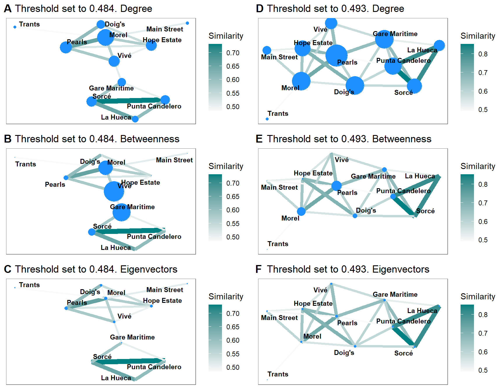
Typological similarity
Code
df_typesobjets <- read.csv(file = "bdd_paaf_typesobjets.csv", row.names = 1)
df_typesobjets = df_typesobjets[,-c(1:5)]
df_toustypes <- read.csv(file = "bdd_paaf_toustypes.csv", row.names = 1)
df_toustypes = df_toustypes[,-c(1:5)]
df_typesperles <- read.csv(file = "bdd_paaf_typesperles.csv", row.names = 1)
df_typesperles = df_typesperles[,-c(1:5)]
color_sites_types = as.data.frame(row.names(df_typesobjets))
colnames(color_sites_types)="Site"
color_sites_types=inner_join(color_sites_types,data_sites, by = c("Site" = "Site")) %>%
select(-Site_short, -Index, -Longitude, -Latitude,-Culture)
color_sites_types$color = str_replace_all(color_sites_types$Period, color_periods)
color_sites_toustypes = as.data.frame(row.names(df_toustypes))
colnames(color_sites_toustypes)="Site"
color_sites_toustypes=inner_join(color_sites_toustypes,data_sites, by = c("Site" = "Site")) %>%
select(-Site_short, -Index, -Longitude, -Latitude,-Culture)
color_sites_toustypes$color = str_replace_all(color_sites_toustypes$Period, color_periods)
color_sites_typesperles = as.data.frame(row.names(df_typesperles))
colnames(color_sites_typesperles)="Site"
color_sites_typesperles=inner_join(color_sites_typesperles,data_sites, by = c("Site" = "Site")) %>%
select(-Site_short, -Index, -Longitude, -Latitude,-Culture)
color_sites_typesperles$color = str_replace_all(color_sites_typesperles$Period, color_periods) Similarity analyses by seriation and correspondence analysis were also carried out on typological data in order to search for chronological specificities in terms of the forms of produced objects, which could provide very interesting information on the technical and/or aesthetic choices of the Amerindians of the Ceramic period. At the lowest level of detail, what I call object type, there is no very interesting result but the fact that beads are largely dominant in the samples, except for the site of La Hueca which yielded more pendants than beads (Figure 14). The seriation concerning object types was still carried out, showing a division in three groups of the archaeological sites (Figure 15). One group is characterized by a high proportion of bead-pendants, composed of two late Ceramic sites in the Dominican Republic, El Carril and El Cabo. Another group of three sites includes the sites richest in pendants: Sorcé La Hueca, Punta Candelero and Elliot’s, two early Ceramic sites and one middle Ceramic site. Finally, the vast majority of sites are located in a third cluster very rich in beads, within which only those of the late Ceramic period stand out a little: Playa Grande because of the labrets that have been identified there, and El Flaco because of its content of bead-pendants that places it close to the first group.
Code
#pielou_toustypes_graph=cbind(Site=row.names(pielou_toustypes),pielou_toustypes) %>%
# inner_join(data_sites, by = c("Site" = "Site_short"))
df_objets = data.frame(
Site = row.names(df_typesobjets),
Ratio = 100*df_typesobjets$Bead/(df_typesobjets$Bead+df_typesobjets$Pendant)
)
df_objets = inner_join(df_objets,data_sites, by = c("Site" = "Site"))
df_objets$Color <- str_replace_all(df_objets$Period, color_periods)
df_objets$Period <- factor(df_objets$Period, levels=c('Early Ceramic', 'Middle Ceramic', 'Middle-Late Ceramic', 'Late Ceramic','Late-Final Ceramic'))
df_objets$Color = factor(df_objets$Color, levels=c("dodgerblue", "darkorange","mediumblue", "darkgrey", "gold"))
plot <- ggplot(df_objets, aes(x = reorder(Site,+Ratio), y = Ratio,fill=df_objets$Color))+
geom_bar(stat="identity")+
scale_fill_identity("Legend", labels = levels(as.factor(df_objets$Period)),guide = "legend") +
theme(axis.text.x=element_text(angle=45, hjust=0.9)) + xlab("Site")
plot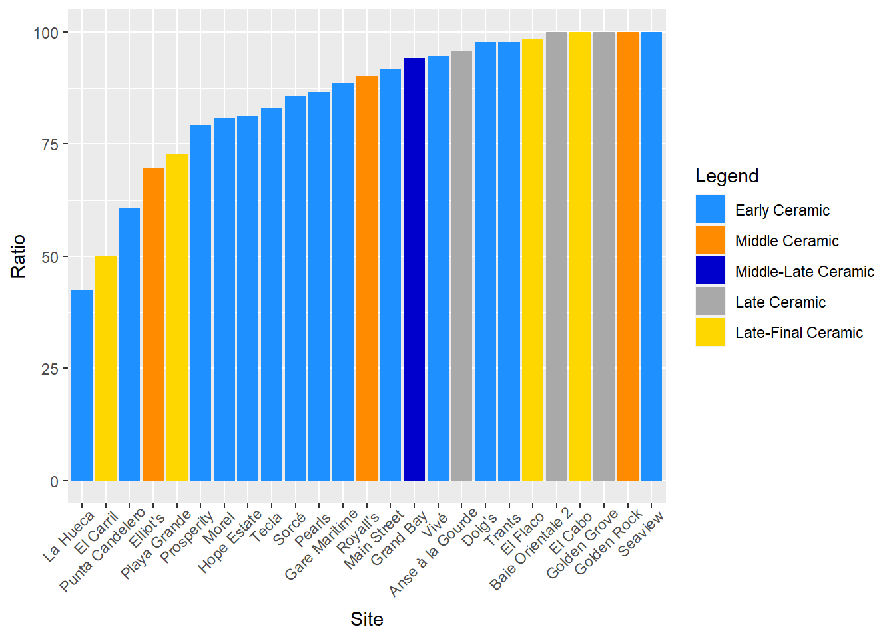
Code
hmap_typesobjets = heatmaply(df_typesobjets,
scale = "row", #scaling of values to compare quite different samples
col = bgy.ramp(100), #use of teal color
seriate = "OLO", #ordering of the leaves
RowSideColors = color_sites_types$color, #adding the color bars for Periods
key.title = "Similarity",
cexCol = 0.9)
#hmap_typesobjets[["x"]][["layout"]][["annotations"]][[1]][["text"]]="" #removing a word above the row denderogram
hmap_typesobjets[["x"]][["layout"]][["xaxis2"]][["ticktext"]]="Period" #changing the automatic name to Period below the color bars
hmap_typesobjetsCode
#export(p = hmap_typesobjets,file = "hmap_typesobjets.png")Looking more closely at the typology, it is interesting to observe the groups formed when seriation concerns the sites for which information on bead and pendant types is known (Figure 16), as well as focusing solely on the beads (Figure 17). When bead and pendant types are taken into account, the main distinction is between Late Ceramic sites and the others, once again, since El Flaco and El Cabo are isolated due to their content of bead-pendants. The other sites are separated into two groups depending on whether they are richer in cylindrical or discoid beads, which is even more strongly confirmed in the analysis focused solely on bead types, which clearly distinguishes these two groups (Figure 17). Although the separation criteria of the clusters are clear, the content of these clusters only provides one clear piece of information on a possible chronological distinction: there is none. These analyses clearly indicate that sites can be quite different from each other in terms of the typology of beads and pendants, but this difference is not related to the chronological period to which the archaeological site is attributed, except for the Late Ceramic sites from Dominican Republic.
Code
hmap_toustypes = heatmaply(df_toustypes,
scale = "row", #scaling of values to compare quite different samples
col = bgy.ramp(100), #use of teal color
seriate = "OLO", #ordering of the leaves
RowSideColors = color_sites_toustypes$color, #adding the color bars for Periods
key.title = "Similarity",
cexCol = 0.9)
#hmap_toustypes[["x"]][["layout"]][["annotations"]][[1]][["text"]]="" #removing a word above the row denderogram
hmap_toustypes[["x"]][["layout"]][["xaxis2"]][["ticktext"]]="Period" #changing the automatic name to Period below the color bars
hmap_toustypesCode
#export(p = hmap_toustypes,file = "hmap_toustypes.png")Code
hmap_typesperles = heatmaply(df_typesperles,
scale = "row", #scaling of values to compare quite different samples
col = bgy.ramp(100), #use of teal color
seriate = "OLO", #ordering of the leaves
RowSideColors = color_sites_typesperles$color, #adding the color bars for Periods
key.title = "Similarity",
cexCol = 0.9)
#hmap_typesperles[["x"]][["layout"]][["annotations"]][[1]][["text"]]="" #removing a word above the row denderogram
hmap_typesperles[["x"]][["layout"]][["xaxis2"]][["ticktext"]]="Period" #changing the automatic name to Period below the color bars
hmap_typesperlesCode
#export(p = hmap_typesperles,file = "hmap_typesperles.png")Correspondence Analysis carried out on the detailed typological data required additional processing. Indeed, while seriations aim to group sites, CA tries to maximize the variance on a few dimensions and therefore seeks to highlight disparities and differences. Thus, rare types have a huge weight in the overall variance of the dataset, as the few sites that contain them are compared to sites that do not contain them at all, and this obscures the variability related to other types. If in the seriations the rarity of faceted beads identified only in Trants, or the rarely inventoried labrets, did not seem to play a major role in bringing sites closer together, in the CA, it was necessary to remove them from the dataset, otherwise the only information that could be gleaned was that the sites that presented these rare types were different from the others. Then, as with some diversity analyses, the faceted bead type was excluded (only 1 site), as well as spherical beads (less than 10 objects) and anthropozoomorphic pendants (less than 10 objects). The bead-pendants, which also have a strong weight in the analysis, were not removed because they are present in significant quantities, are easily identifiable, and since they have a strong impact only on the first dimension, it is possible to ignore their presence by observing dimensions 2 and 3 (Figure 18 C). This also applies when performing the same analysis on bead types only (Figure 19). These analyses confirm the clear distinction between the El Cabo and El Flaco sites, related to their content of bead-pendants. When observing dimensions 2 and 3 of these CA, the sites do not form well-defined groups, and in particular, no chronological distinction is evident. The most opposed types are the biconical, barrel, and planoconvex beads, while discoid and cylindrical beads are located more centrally, indicating that they have lower variance. In particular, discoid beads seem to be the most common element in both analysis including all types as well as in the one including only beads.
Code
df_alltypescleanCA=cbind(df_toustypes[,-c(2,6,10)],color_sites_toustypes)
df_alltypescleanCA$Period <- factor(df_alltypescleanCA$Period, levels=c('Early Ceramic', 'Middle Ceramic','Middle-Late Ceramic', 'Late Ceramic', 'Late-Final Ceramic'))
df_alltypescleanCA$color = factor(df_alltypescleanCA$color, levels=c("dodgerblue", "darkorange","mediumblue", "darkgrey", "gold"))
ca_alltypes = CA(df_alltypescleanCA[,1:9],graph = F)
dim1_2 = fviz_ca_biplot(ca_alltypes, axes = c(1, 2), graph.type = "ggplot", invisible="quali", labelsize = 2,repel = T,col.row=df_alltypescleanCA$color, palette = df_alltypescleanCA$color) + scale_color_identity("Period", labels = levels(as.factor(df_alltypescleanCA$Period)),guide = "legend") + theme(legend.position = "none")
dim1_3 = fviz_ca_biplot(ca_alltypes, axes = c(1, 3), graph.type = "ggplot", invisible="quali", labelsize = 2,repel = T,col.row=df_alltypescleanCA$color, palette = df_alltypescleanCA$color) + scale_color_identity("Period", labels = levels(as.factor(df_alltypescleanCA$Period)),guide = "legend")
dim2_3 = fviz_ca_biplot(ca_alltypes, axes = c(2, 3), graph.type = "ggplot", invisible="quali", labelsize = 2,repel = T,col.row=df_alltypescleanCA$color, palette = df_alltypescleanCA$color) + scale_color_identity("Period", labels = levels(as.factor(df_alltypescleanCA$Period)),guide = "legend") + theme(legend.position = "none")
legend_CA_alltypes = cowplot::get_legend(dim1_3)
dim1_2[["labels"]][["colour"]] = "Period"
dim1_3[["labels"]][["colour"]] = "Period"
dim2_3[["labels"]][["colour"]] = "Period"
plot_grid(dim1_2,dim1_3 + theme(legend.position = "none"),dim2_3,legend_CA_alltypes,rel_widths = c(1,1,.5),nrow =2, labels = c("A","B","C"),align = 'v')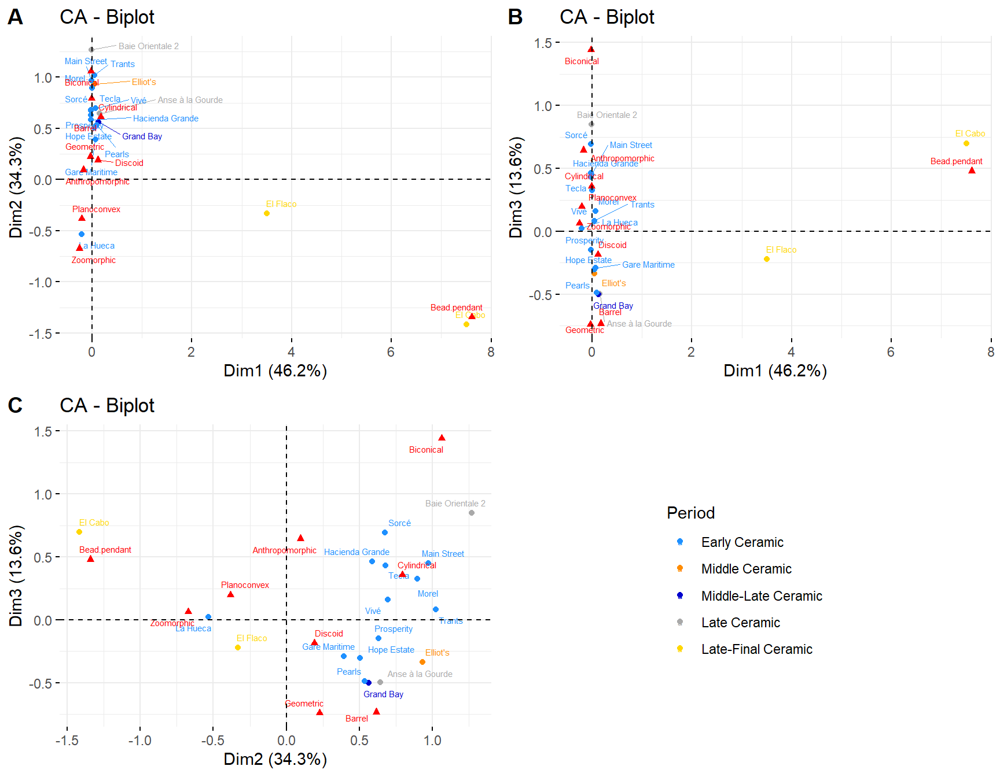
Code
# Removing from the beads dataset the faceted beads (only one site) and the spherical beads (less than 10 in the dataset).
df_typesbeadscleanCA=cbind(df_typesperles[,-c(4,7)],color_sites_typesperles)
# Fixing order of colors and labels for legend
df_typesbeadscleanCA$Period <- factor(df_typesbeadscleanCA$Period, levels=c('Early Ceramic', 'Middle Ceramic','Middle-Late Ceramic', 'Late Ceramic', 'Late-Final Ceramic'))
df_typesbeadscleanCA$color = factor(df_typesbeadscleanCA$color, levels=c("dodgerblue", "darkorange","mediumblue", "darkgrey", "gold"))
# Calculating Correspondance Analysis
ca_typesbeads = CA(df_typesbeadscleanCA[,1:6],graph = F)
dim1_2 = fviz_ca_biplot(ca_typesbeads, axes = c(1, 2), graph.type = "ggplot", invisible="quali", labelsize = 2,repel = T,col.row=df_typesbeadscleanCA$color, palette = df_typesbeadscleanCA$color) + scale_color_identity("Period", labels = levels(as.factor(df_typesbeadscleanCA$Period)),guide = "legend") + theme(legend.position = "none")
dim1_3 = fviz_ca_biplot(ca_typesbeads, axes = c(1, 3), graph.type = "ggplot", invisible="quali", labelsize = 2,repel = T,col.row=df_typesbeadscleanCA$color, palette = df_typesbeadscleanCA$color) + scale_color_identity("Period", labels = levels(as.factor(df_typesbeadscleanCA$Period)),guide = "legend")
dim2_3 = fviz_ca_biplot(ca_typesbeads, axes = c(2, 3), graph.type = "ggplot", invisible="quali", labelsize = 2,repel = T,col.row=df_typesbeadscleanCA$color, palette = df_typesbeadscleanCA$color) + scale_color_identity("Period", labels = levels(as.factor(df_typesbeadscleanCA$Period)),guide = "legend") + theme(legend.position = "none")
legend_CA_typesbeads = cowplot::get_legend(dim1_3) # storing the legend of a graph
dim1_2[["labels"]][["colour"]] = "Period"
dim1_3[["labels"]][["colour"]] = "Period"
dim2_3[["labels"]][["colour"]] = "Period"
plot_grid(dim1_2,dim1_3 + theme(legend.position = "none"),dim2_3,legend_CA_typesbeads,rel_widths = c(1,1,.5),nrow =2, labels = c("A","B","C"),align = 'v')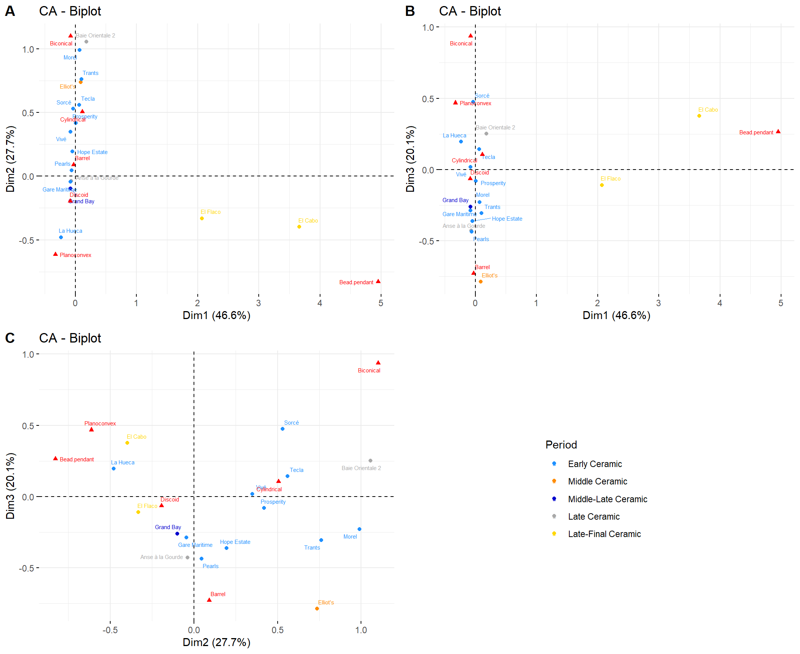
Combined typology and raw materials similarity
Code
# Number of objects of each type for each raw material
df_typeraw <- read.csv(file = "bdd_paaf_rawtypo.csv", row.names = 1)
# Number of objects of each type for each raw material (greenstones grouped except turquoise)
df_typerawgreenturq <- read.csv(file = "bdd_paaf_rawgreenturqtypo.csv", row.names = 1)
# number of object of each combination type-raw material for each site
df_typerawsites_simple <- read.csv(file = "bdd_paaf_rawtyposites.csv", row.names = 1)
color_sites_typerawsites = as.data.frame(row.names(df_typerawsites_simple))
colnames(color_sites_typerawsites)="Site"
color_sites_typerawsites=inner_join(color_sites_typerawsites,data_sites, by = c("Site" = "Site")) %>%
select(-Site_short, -Index, -Longitude, -Latitude,-Culture)
color_sites_typerawsites$color = str_replace_all(color_sites_typerawsites$Period, color_periods)In order to extract even more in-depth information, while being aware of the varying quality of the data when it comes to entering into detail, we can try to analyze the dataset combining raw materials and typology. First, a new dataset needs to be created, combining information from typology, raw materials, and keeping only the sites for which both information is known (Table 5). Correspondence Analysis, whether introducing maximum precision at the level of green rocks or grouping green rocks together (except for turquoise), shows well-marked preferences for certain materials for the production of certain types of lapidary adornments (Figure 20). These analyses also show that zoomorphic pendants (the vast majority of pendants) are located opposite to colorless materials (calcite, rock crystal) and finally opposite to most types of beads, as they are opposed on the first dimension of the CA which accounts for 65% of the variance. In particular, the proximity of serpentine with zoomorphic pendants is noteworthy, when precise determinations of materials are preserved, and that of malachite with geometric pendants. Nephrite and paragonite are less affiliated with a particular type, but when green rocks are grouped, the weight of serpentine (in very rich sites in Puerto Rico, for example) takes over (Figure 20 B). The discoid type remains fairly central on the second dimension of the Correspondence Analysis, which mainly opposes elongated beads with planoconvex beads and geometric pendants. The most common colorless materials (calcite and rock crystal) are also located in the central part of this second dimension, used to produce several different types of beads. It is interesting to note that these two materials with similar colors ultimately have a similar, diversified use. Other materials are strongly linked to elongated beads: white and red materials, and to a lesser extent, amethyst and diorite. It can also be observed that turquoise, as expected, is located close to the planoconvex type.
Code
library(knitr)
library(kableExtra)
dataset_types_rawmaterials=read.csv(file = "Table_types_rawmaterials.csv")
kable(dataset_types_rawmaterials,col.names = gsub("[_]", " ", names(dataset_types_rawmaterials)), align = "lccccccccc") %>%
row_spec(0, align = "c") %>%
kable_styling(latex_options = "hold_position")| Gemstone | Barrel | Biconical | Cylindrical | Discoid | Faceted | Geometric | Planoconvex | Spherical | Zoomorphic |
|---|---|---|---|---|---|---|---|---|---|
| Amethyst | 69 | 8 | 31 | 39 | 2 | - | 7 | 2 | 1 |
| Anorthite | - | - | - | 4 | - | - | - | - | - |
| Aventurine | 1 | 1 | 10 | 2 | 1 | 1 | 1 | - | 7 |
| Barytine | - | - | 2 | - | - | - | - | - | - |
| Calcite | 17 | 1 | 46 | 53 | - | 6 | 1 | - | 11 |
| Carnelian | 47 | - | 37 | 12 | 4 | - | - | - | - |
| Chalcedony | 2 | - | - | - | - | - | - | - | - |
| Diorite | 135 | 2 | 201 | 168 | 6 | - | 2 | - | 1 |
| Jasper | 2 | - | - | - | - | - | - | - | - |
| Limestone | 2 | - | - | - | - | - | - | - | - |
| Malachite | - | - | 1 | 1 | - | 2 | 2 | - | 1 |
| Marble | 1 | - | 3 | - | - | - | - | - | - |
| Nephrite | 1 | - | 3 | 5 | - | 23 | 5 | 1 | 42 |
| Paragonite | - | - | - | 6 | - | - | 1 | - | 7 |
| Rock_crystal | 36 | 8 | 74 | 78 | 2 | 2 | 9 | - | 4 |
| Serpentine | 2 | 1 | 4 | 20 | - | 4 | 1 | 1 | 717 |
| Stalactite | 1 | - | 1 | - | - | - | - | - | - |
| Sudoite | - | 1 | - | 4 | - | - | - | - | 2 |
| Turquoise | 15 | - | 7 | 135 | 1 | 10 | 29 | - | 4 |
Code
ca_typeraw = CA(df_typeraw, graph = F)
ca_typerawgreenturq = CA(df_typerawgreenturq, graph = F)
plot_grid(fviz_ca(ca_typeraw, axes = c(1, 2),graph.type = "ggplot",labelsize = 2,repel = T), fviz_ca(ca_typerawgreenturq, axes = c(1, 2),graph.type = "ggplot",labelsize = 2,repel = T),ncol = 2, labels = "AUTO")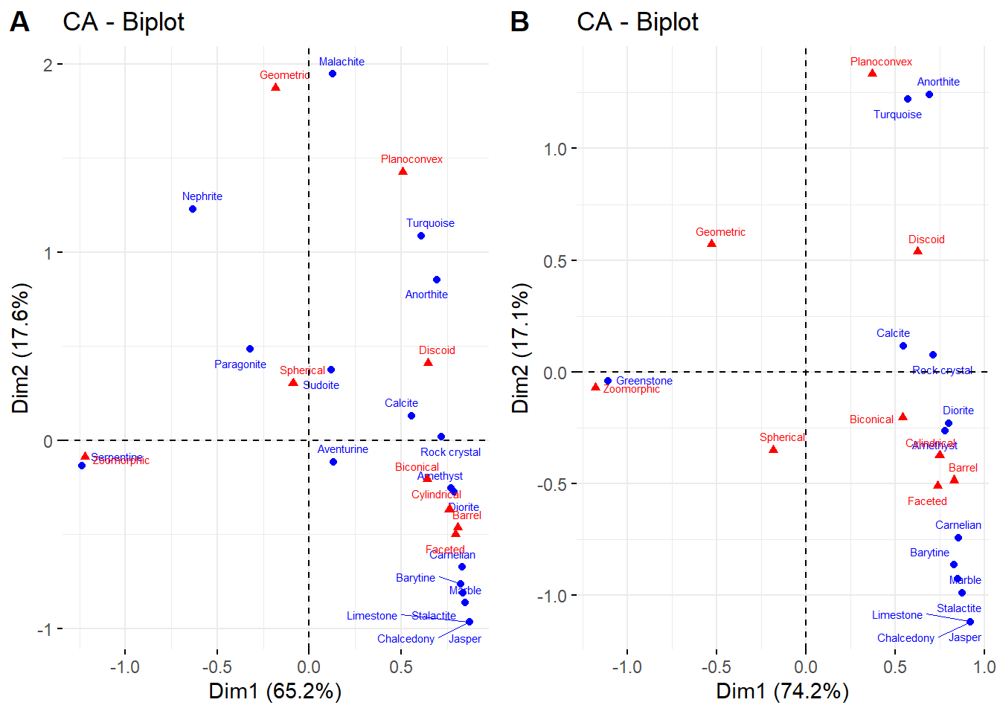
It is also possible, while retaining the most information (site+raw material+typology), to create a dataset allowing for the analysis of similarity between sites (Table 6). With such precise data, the number of objects is significantly reduced and drop to 2224, due to the combination of lacking typologocial or gemological information for several sites. For example, the site of Doig’s only includes one object here because only one object from this site is described in terms of raw material and type, while the complete collection is made of 43 objects. The problem is the same for sites that have been included in other analyses, such as Hacienda Grande (5 objects known for type and raw material), Main Street (8), Playa Grande (4), Punta Candelero (7), and Tecla (2). All of which have been removed from the dataset. Although their weight is very low and does not change the result of the correspondence analysis, these poorly documented sites create significant distortions in network analyses. The limit for retaining an archaeological site in the dataset was arbitrarily set at 10 objects documented for their type and raw material. This dataset of 14 sites and 84 Type-Raw material, although it is far from ideal, allows the study of proximities between archaeological sites in the corpus at an unprecedented level of detail. The resulting CA includes the 14 sites, but it is not possible to display the 84 Type-Raw material combinations while maintaining a readable graph (Figure 21). This analysis highlights, on the first dimension of the analysis (28% of the expressed variance), the major opposition that exists, at this level of precision, between the sites rich in green rocks and pendants from the Early Ceramic of Vieques, such as La Hueca and Sorcé, and the sites richer in colorless and non-green materials, and richer in beads, from the Cedrosan Saladoid and later periods. The second and third dimensions of the analysis (29% of the variance combined) confirm the clear opposition between the Early Ceramic and the later periods. Although the only Middle Ceramic site retained in this dataset behaves in this CA like the Early Ceramic sites, the site of Grand Bay, attributed to the Middle/Late Ceramic period for the lapidary collection, is situated at an interface position between the Early Ceramic and Late/Final Ceramic sites.
Code
library(knitr)
library(kableExtra)
dataset_types_rawmaterials_sites=read.csv(file = "Table_types_rawmaterials_sites.csv")
kable(dataset_types_rawmaterials_sites,col.names = gsub("[_]", " ", names(dataset_types_rawmaterials_sites)),align = "lccccccccccccccccccc") %>%
add_indent(c(1, 10,30,45,47,56,63,67,82), level_of_indent = 1) %>%
row_spec(0, align = "c") %>%
row_spec(c(1, 10,30,45,47,56,63,67,82), bold = T) %>%
kable_styling(latex_options = "hold_position")| Type | Amethyst | Anorthite | Aventurine | Barytine | Calcite | Carnelian | Chalcedony | Diorite | Jasper | Limestone | Malachite | Marbre | Nephrite | Paragonite | Rock crystal | Serpentine | Stalactite | Sudoite | Turquoise |
|---|---|---|---|---|---|---|---|---|---|---|---|---|---|---|---|---|---|---|---|
| Biconical | |||||||||||||||||||
| Hacienda Grande | - | - | - | - | - | - | - | - | - | - | - | - | - | - | 1 | - | - | - | - |
| Hope Estate | - | - | - | - | 1 | - | - | - | - | - | - | - | - | - | 1 | - | - | - | - |
| La Hueca | - | - | 1 | - | - | - | - | 1 | - | - | - | - | - | - | 1 | 1 | - | - | - |
| Morel | 4 | - | - | - | - | - | - | - | - | - | - | - | - | - | - | - | - | 1 | - |
| Pearls | - | - | - | - | - | - | - | 1 | - | - | - | - | - | - | 3 | - | - | - | - |
| Sorcé | - | - | - | - | - | - | - | - | - | - | - | - | - | - | 1 | - | - | - | - |
| Trants | - | - | - | - | - | - | - | - | - | - | - | - | - | - | 1 | - | - | - | - |
| Vivé | 4 | - | - | - | - | - | - | - | - | - | - | - | - | - | - | - | - | - | - |
| Cylindrical | |||||||||||||||||||
| Anse à la Gourde | - | - | - | - | 3 | - | - | - | - | - | - | - | - | - | - | - | 1 | - | - |
| Baie Orientale 2 | - | - | - | - | 10 | - | - | - | - | - | - | - | - | - | - | - | - | - | - |
| El Cabo | - | - | - | - | 3 | - | - | 15 | - | - | - | - | - | - | - | - | - | - | - |
| El Carril | - | - | - | - | 3 | - | - | 3 | - | - | - | - | - | - | - | - | - | - | - |
| El Flaco | - | - | - | - | 15 | - | - | 7 | - | - | - | - | - | - | - | - | - | - | - |
| Elliot's | 1 | - | - | 1 | - | - | - | 4 | - | - | - | - | - | - | 1 | 1 | - | - | - |
| Gare maritime | 2 | - | - | - | - | - | - | - | - | - | - | - | - | - | 1 | 1 | - | - | 2 |
| Grand Bay | - | - | - | - | - | - | - | 2 | - | - | - | - | - | - | - | - | - | - | - |
| Hacienda Grande | - | - | - | - | - | 1 | - | 2 | - | - | - | - | - | - | - | - | - | - | - |
| Hope Estate | 1 | - | - | - | 7 | 1 | - | 5 | - | - | - | - | - | - | 5 | - | - | - | - |
| La Hueca | 1 | - | 1 | - | 1 | 1 | - | 1 | - | - | - | 1 | - | - | 2 | 1 | - | - | 1 |
| Main Street | - | - | - | - | 1 | - | - | 1 | - | - | - | 1 | - | - | 3 | - | - | - | - |
| Morel | 1 | - | - | - | - | 1 | - | 5 | - | - | - | 1 | - | - | 13 | - | - | - | - |
| Pearls | 21 | - | - | - | 1 | 22 | - | 139 | - | - | - | - | 3 | - | 23 | - | - | - | 3 |
| Playa Grande | - | - | - | - | - | - | - | 2 | - | - | - | - | - | - | - | - | - | - | - |
| Prosperity | - | - | - | - | - | 1 | - | - | - | - | - | - | - | - | 2 | - | - | - | - |
| Sorcé | 1 | - | 1 | - | 1 | 1 | - | 1 | - | - | 1 | - | - | - | 1 | 1 | - | - | 1 |
| Trants | 3 | - | 8 | - | - | 7 | - | 17 | - | - | - | - | - | - | 21 | - | - | - | - |
| Vivé | - | - | - | 1 | 1 | 2 | - | - | - | - | - | - | - | - | 2 | - | - | - | - |
| Discoid | |||||||||||||||||||
| Anse à la Gourde | - | 1 | - | - | 6 | - | - | 3 | - | - | - | - | - | - | - | - | - | - | 1 |
| Baie Orientale 2 | - | - | - | - | 1 | - | - | - | - | - | - | - | - | - | - | - | - | - | - |
| El Cabo | - | - | - | - | - | - | - | 9 | - | - | - | - | - | - | - | - | - | - | - |
| El Flaco | - | - | - | - | 32 | - | - | 6 | - | - | - | - | - | - | - | - | - | - | - |
| Gare maritime | - | - | 1 | - | 1 | - | - | - | - | - | - | - | - | - | 2 | 8 | - | 1 | 3 |
| Grand Bay | - | - | - | - | 1 | - | - | 4 | - | - | - | - | - | - | - | - | - | - | - |
| Hope Estate | 1 | 2 | - | - | 7 | - | - | - | - | - | - | - | - | 5 | 3 | 4 | - | 2 | 4 |
| La Hueca | 1 | - | 1 | - | 1 | - | - | - | - | - | 1 | - | 1 | - | 2 | 1 | - | - | 1 |
| Main Street | - | - | - | - | - | - | - | - | - | - | - | - | - | - | 1 | - | - | - | - |
| Morel | - | - | - | - | 1 | - | - | - | - | - | - | - | - | - | - | - | - | - | - |
| Pearls | 37 | - | - | - | 3 | 12 | - | 143 | - | - | - | - | 4 | - | 58 | 7 | - | - | 119 |
| Prosperity | - | - | - | - | - | - | - | - | - | - | - | - | - | - | - | - | - | - | 1 |
| Trants | - | - | - | - | - | - | - | - | - | - | - | - | - | - | 12 | - | - | - | - |
| Vivé | - | 1 | - | - | - | - | - | 3 | - | - | - | - | - | 1 | - | - | - | 1 | 6 |
| Faceted | |||||||||||||||||||
| Trants | 2 | - | 1 | - | - | 4 | - | 6 | - | - | - | - | - | - | 2 | - | - | - | 1 |
| Geometric | |||||||||||||||||||
| Anse à la Gourde | - | - | - | - | 1 | - | - | - | - | - | - | - | - | - | - | - | - | - | - |
| Gare maritime | - | - | - | - | 2 | - | - | - | - | - | - | - | - | - | - | 2 | - | - | - |
| Grand Bay | - | - | - | - | - | - | - | - | - | - | - | - | - | - | - | 1 | - | - | - |
| Hope Estate | - | - | - | - | 2 | - | - | - | - | - | 1 | - | - | - | 1 | - | - | - | - |
| La Hueca | - | - | 1 | - | 1 | - | - | - | - | - | 1 | - | 1 | - | - | 1 | - | - | - |
| Pearls | - | - | - | - | - | - | - | - | - | - | - | - | 21 | - | 1 | - | - | - | 9 |
| Prosperity | - | - | - | - | - | - | - | - | - | - | - | - | 1 | - | - | - | - | - | - |
| Trants | - | - | - | - | - | - | - | - | - | - | - | - | - | - | - | - | - | - | 1 |
| Planoconvex | |||||||||||||||||||
| Gare maritime | - | - | - | - | - | - | - | - | - | - | - | - | - | - | - | - | - | - | 1 |
| Hope Estate | - | - | - | - | - | - | - | - | - | - | - | - | - | 1 | - | - | - | - | - |
| La Hueca | - | - | 1 | - | 1 | - | - | - | - | - | 1 | - | 1 | - | - | 1 | - | - | 1 |
| Pearls | 7 | - | - | - | - | - | - | 2 | - | - | - | - | 3 | - | 9 | - | - | - | 24 |
| Sorcé | - | - | - | - | - | - | - | - | - | - | 1 | - | 1 | - | - | 1 | - | - | 1 |
| Vivé | - | - | - | - | - | - | - | - | - | - | - | - | - | - | - | - | - | - | 2 |
| Spherical | |||||||||||||||||||
| Morel | 1 | - | - | - | - | - | - | - | - | - | - | - | - | - | - | - | - | - | - |
| Pearls | - | - | - | - | - | - | - | - | - | - | - | - | 1 | - | - | 1 | - | - | - |
| Vivé | 1 | - | - | - | - | - | - | - | - | - | - | - | - | - | - | - | - | - | - |
| Barrel | |||||||||||||||||||
| Anse à la Gourde | - | - | - | - | 1 | - | - | 1 | - | - | - | 1 | - | - | - | - | - | - | - |
| El Flaco | - | - | - | - | 13 | - | - | - | - | - | - | - | - | - | - | - | - | - | - |
| Elliot's | 1 | - | - | - | - | 2 | 1 | 1 | - | 2 | - | - | - | - | - | - | - | - | - |
| Gare maritime | 2 | - | - | - | - | - | - | - | 1 | - | - | - | - | - | - | 1 | - | - | - |
| Hacienda Grande | - | - | - | - | - | - | - | 1 | - | - | - | - | - | - | - | - | - | - | - |
| Hope Estate | 3 | - | - | - | 2 | 3 | - | 9 | - | - | - | - | - | - | - | - | - | - | - |
| La Hueca | 1 | - | 1 | - | - | 1 | - | 1 | - | - | - | - | - | - | 1 | 1 | - | - | - |
| Main Street | - | - | - | - | - | 1 | - | - | - | - | - | - | - | - | - | - | - | - | - |
| Morel | 6 | - | - | - | 1 | 1 | - | 4 | - | - | - | - | - | - | - | - | 1 | - | - |
| Pearls | 50 | - | - | - | - | 36 | - | 96 | - | - | - | - | 1 | - | 31 | - | - | - | 15 |
| Prosperity | 2 | - | - | - | - | 1 | - | - | - | - | - | - | - | - | - | - | - | - | - |
| Sorcé | 1 | - | - | - | - | - | - | 1 | - | - | - | - | - | - | 1 | - | - | - | - |
| Trants | 2 | - | - | - | - | 1 | - | 19 | - | - | - | - | - | - | 3 | - | - | - | - |
| Vivé | 1 | - | - | - | - | 1 | 1 | 2 | 1 | - | - | - | - | - | - | - | - | - | - |
| Zoomorphic | |||||||||||||||||||
| Doig's | - | - | - | - | - | - | - | - | - | - | - | - | 1 | - | - | - | - | - | - |
| Elliot's | - | - | - | - | - | - | - | - | - | - | - | - | 1 | - | - | - | - | - | - |
| Gare maritime | - | - | - | - | - | - | - | - | - | - | - | - | - | 1 | - | 1 | - | 1 | 1 |
| Hope Estate | - | - | - | - | 3 | - | - | - | - | - | - | - | 1 | 5 | - | 1 | - | - | - |
| La Hueca | 1 | - | 3 | - | 4 | - | - | - | - | - | 1 | - | 4 | - | 4 | 669 | - | - | - |
| Main Street | - | - | - | - | - | - | - | - | - | - | - | - | 1 | - | - | - | - | - | - |
| Morel | - | - | 1 | - | - | - | - | - | - | - | - | - | 3 | 1 | - | 1 | - | 1 | - |
| Pearls | - | - | - | - | 2 | - | - | 1 | - | - | - | - | 23 | - | - | - | - | - | 3 |
| Prosperity | - | - | 1 | - | - | - | - | - | - | - | - | - | - | - | - | 1 | - | - | - |
| Punta Candelero | - | - | - | - | - | - | - | - | - | - | - | - | - | - | - | 7 | - | - | - |
| Sorcé | - | - | 1 | - | 2 | - | - | - | - | - | - | - | 5 | - | - | 36 | - | - | - |
| Tecla | - | - | 1 | - | - | - | - | - | - | - | - | - | 1 | - | - | - | - | - | - |
| Trants | - | - | - | - | - | - | - | - | - | - | - | - | - | - | - | 1 | - | - | - |
| Vivé | - | - | - | - | - | - | - | - | - | - | - | - | 2 | - | - | - | - | - | - |
Code
df_typerawsitesCA=cbind(df_typerawsites_simple,color_sites_typerawsites)
df_typerawsitesCA$Period <- factor(df_typerawsitesCA$Period, levels=c('Early Ceramic', 'Middle Ceramic','Middle-Late Ceramic', 'Late Ceramic', 'Late-Final Ceramic'))
df_typerawsitesCA$color = factor(df_typerawsitesCA$color, levels=c("dodgerblue", "darkorange","mediumblue", "darkgrey", "gold"))
ca_typerawsites = CA(df_typerawsites_simple[,6:89],graph = F)
dim1_2 = fviz_ca_biplot(ca_typerawsites, axes = c(1, 2), graph.type = "ggplot", invisible=c("col","quali"), labelsize = 2,repel = T,col.row=df_typerawsitesCA$color, palette = df_typerawsitesCA$color) + scale_color_identity("Period", labels = levels(as.factor(df_typerawsitesCA$Period)),guide = "legend")+ theme(legend.position = "none")
dim1_3 = fviz_ca_biplot(ca_typerawsites, axes = c(1, 3), graph.type = "ggplot", invisible=c("col","quali"), labelsize = 2,repel = T,col.row=df_typerawsitesCA$color, palette = df_typerawsitesCA$color) + scale_color_identity("Period", labels = levels(as.factor(df_typerawsitesCA$Period)),guide = "legend")
dim2_3 = fviz_ca_biplot(ca_typerawsites, axes = c(2, 3), graph.type = "ggplot", invisible=c("col","quali"), labelsize = 2,repel = T,col.row=df_typerawsitesCA$color, palette = df_typerawsitesCA$color) + scale_color_identity("Period", labels = levels(as.factor(df_typerawsitesCA$Period)),guide = "legend")+ theme(legend.position = "none")
legend_CA_typerawsites = cowplot::get_legend(dim1_2)
dim1_2[["labels"]][["colour"]] = "Period"
dim1_3[["labels"]][["colour"]] = "Period"
dim2_3[["labels"]][["colour"]] = "Period"
plot_grid(dim1_2,dim1_3+ theme(legend.position = "none"),dim2_3,legend_CA_typerawsites,rel_widths = c(1,1),nrow =2, labels = c("A","B","C"),align = 'v')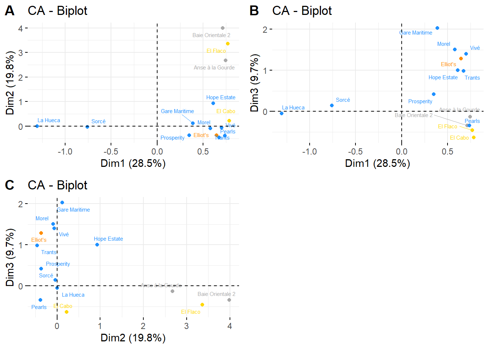
When network analysis is performed on this dataset combining types and raw materials, it is clear that the core of the network corresponds to Cedrosan Saladoid sites, while Vieques’ Early Ceramic sites (Sorcé La Hueca and Sorcé) are only weakly connected to it (Figure 22). The Late Ceramic and Final Ceramic sites are also isolated, grouped together, although clearer links connect them to the core of the network. The large number of very specific categories on which this analysis is based creates weaker similarity indices than when only types or raw materials were analyzed. However, the same pattern of distribution of sites is found, based on a rather clear subdivision between Early/Middle Ceramic sites and Late/Final Ceramic sites.
Code
T = 0.161 # Threshold for single and complete network
df_typerawsites$Index = row.names(df_typerawsites)
df_typerawsites$Subserie <- str_replace_all(df_typerawsites$Period, color_periods)
df_typerawsites = rename(df_typerawsites,Color = Subserie)
df_typerawsites$Period <- factor(df_typerawsites$Period, levels=c('Early Ceramic', 'Middle Ceramic','Middle-Late Ceramic', 'Late Ceramic', 'Late-Final Ceramic'))
df_typerawsites$Color = factor(df_typerawsites$Color, levels=c("dodgerblue", "darkorange","mediumblue", "darkgrey", "gold"))
edges <- melt(Paaf_typerawsites_BR) %>%
rename(Site1 = Var1, Site2 = Var2, Similarity = value) %>%
filter(Similarity>T)
g = graph_from_data_frame(edges,directed = FALSE,vertices = df_typerawsites[,1:5])
ggraph(g, layout = "kk") +
geom_edge_link(aes(colour = Similarity,edge_width = Similarity)) +
scale_edge_width_continuous(range = c(1, 3),guide = "none") +
scale_edge_colour_gradient(low = "#fafafa",high = "#008080") +
geom_node_point(aes(color=df_typerawsites$Color),shape = 19, stroke = 0.5) +
scale_color_identity("Legend", labels = levels(as.factor(df_typerawsites$Period)),guide = "legend") +
geom_node_text(aes(label = name), repel = TRUE, size = 3,
color = "black", fontface = "bold")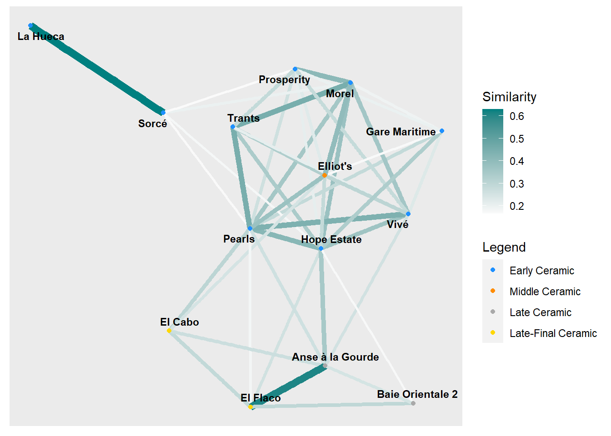
Geographic distribution
Distribution of sites and lapidary artifacts
The distribution of lapidary production in the Ceramic period at a regional level has mostly been analyzed within a chrono-cultural framework, as we have done above. However, it seems important to also analyze this data from a purely geographical perspective in order to highlight whether or not there are variations attributable to this dimension of human settlement in the region. One could indeed expect different distributions of raw materials depending on the geology of the islands. It would also be conceivable that certain types of objects, certain types of beads or pendants, are more represented in one or another sub-region of the archipelago.
It is possible to show that archaeological sites that have yielded lapidary artifacts are distributed throughout the entire Caribbean arc (Figure 23). Almost every island has at least one site (except Barbados), but some islands are less well supplied than others. First of all, there is a certain bias in the two main French islands, Guadeloupe and Martinique, where the research conducted for several years has allowed for an exhaustive inventory that would not have been possible if I had only been able to rely on easily accessible publications, as was the case for the other islands. Antigua is particularly well-endowed, thanks to the work of R. Murphy (1999; 2000). Jamaica is also well-endowed, especially for an island in the Greater Antilles, thanks to the pioneering work of M.J. Roobol & J.W. Lee (1976). When comparing this first map of site distribution with the map of the number of beads and pendants per site, a quite different picture emerges (Figure 24). In fact, less rich areas appear here, such as in the Lesser Antilles: Barbados, St. Vincent, St. Lucia, Dominica. These islands, which all have one or more sites (except Barbados), have not yielded any truly rich sites, unlike Montserrat with the unique but very rich site of Trants, or St. Eustache, which seems quite rich, but actually corresponds to the single site of Golden Rock where we have already seen that there was only one exceptional find: a burial with 81 beads. In the Greater Antilles, too, the change is significant: Puerto Rico and Vieques take their rightful place, which we have already seen with the sites of the Early Ceramic period such as Sorcé, La Hueca, and Punta Candelero, while Jamaica is visibly much poorer, with the numerous sites identified mostly having only one identified object, and although they are attributed to the Early/Middle Ceramic period, they only present objects made of chalcedony, calcite, limestone, but no objects made of green stone or amethyst. Several of these observations can be related to the archaeological research effort in certain islands: Dominica, St. Vincent, Barbados, and Jamaica have not received as much interest as Antigua, St. Martin, or Grenada, at least for the study of stone adornments. However, serendipity certainly plays a role in this unequal distribution, as archaeological research often owes the discovery of major deposits to chance, as is the case, for example, with the Golden Rock burial, which makes up the entire corpus of stone beads from St. Eustache. Excavation methods can also be responsible for differences between islands, as they have been excavated according to various field practice schools, some excavating larger surfaces than others. The only observation that seems possible from these two maps is a greater concentration of beads, not sites, in the Lesser Antilles and up to the east of Puerto Rico.
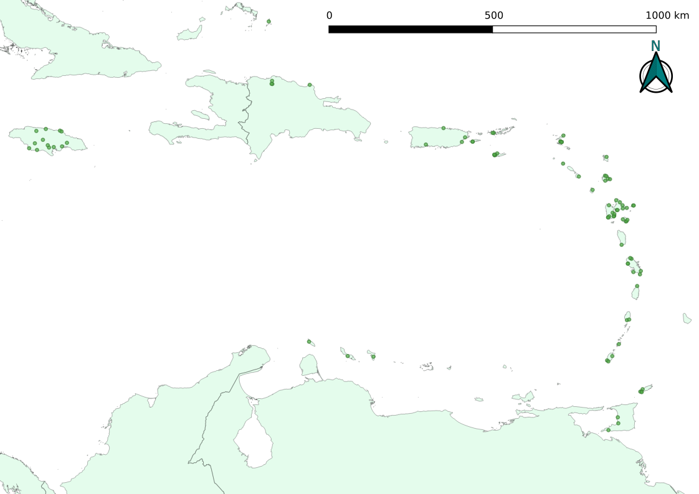
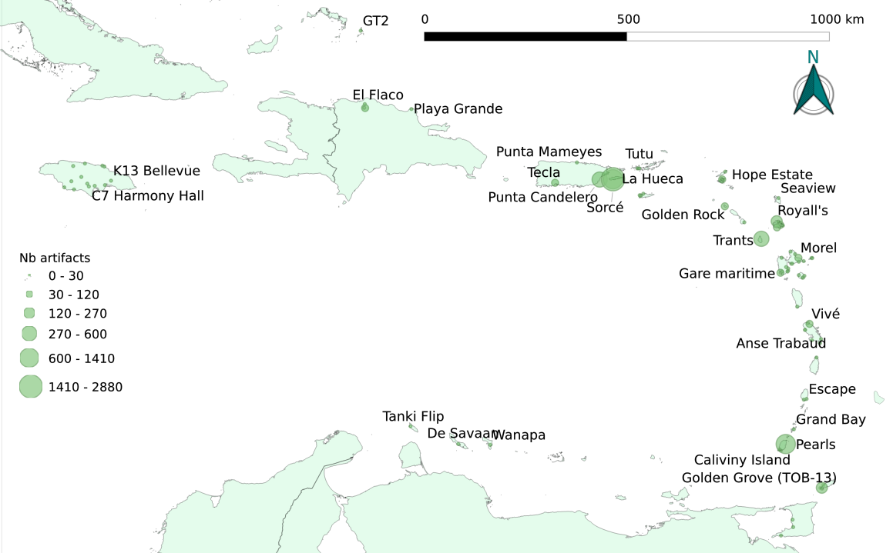
Distribution of raw materials
The network analysis of raw materials shows that the links between sites do not follow a geographical logic since strong similarities can connect sites with very distant positions, while close sites can be unrelated (Figure 25). As previously demonstrated, it is the periods that matters to connect the sites, and not their geographical proximity. The analysis was also carried out by combining green stones with each other (with or without excluding turquoise), and the result is very similar.
Code
# Creation of the them of the map, the background and the limits to which the map must be drawn.
maptheme <- theme(panel.grid = element_blank()) +
theme(axis.text = element_blank()) +
theme(axis.ticks = element_blank()) +
theme(axis.title = element_blank()) +
theme(legend.position = "right") +
theme(panel.grid = element_blank()) +
theme(panel.background = element_rect(fill = "#ffffff")) +
theme(plot.margin = unit(c(0, 0, 0.5, 0), 'cm'))
country_shapes <- geom_polygon(aes(x = long, y = lat, group = group),
data = map_data('world'),
fill = "#CECECE", color = "#515151",
size = 0.15)
mapcoords <- coord_fixed(xlim = c(-75, -59), ylim = c(10, 24))
# Calculating threshold, centrality values, edges and nodes
T = thresh(Paaf_raw_BR)
Paaf_raw_BR_full_thresh = Paaf_raw_BR
Paaf_raw_BR_full_thresh[Paaf_raw_BR_full_thresh < T] <- 0
stats.wt_thresh = net.stats.wt(Paaf_raw_BR_full_thresh)
edges = melt(Paaf_raw_BR_sup) %>%
rename(Site1 = Var1, Site2 = Var2, Similarity = value) %>%
filter(Similarity>=T) #Tmin ou T
Paaf_bdd$Index=row.names(Paaf_bdd)
Paaf_bdd = rename(Paaf_bdd,Site = Index)
g = graph_from_data_frame(edges,directed = FALSE,vertices = Paaf_bdd[,1:7])
# Giving the edges the strating and ending points which are the coordinates of the sites.
edges_for_plot <- edges %>%
inner_join(Paaf_bdd %>% select(Site, Longitude, Latitude),
by = c('Site1' = 'Site')) %>%
rename(x = Longitude, y = Latitude) %>%
inner_join(Paaf_bdd %>% select(Site, Longitude, Latitude),
by = c('Site2' = 'Site')) %>%
rename(xend = Longitude, yend = Latitude)
edge.id = seq(from = 1, to = nrow(edges_for_plot), by = 1)
edges_for_plot = cbind(edge.id,edges_for_plot)
# Positioning the nodes
node_pos <- Paaf_bdd %>%
select(Longitude, Latitude) %>%
rename(x = Longitude, y = Latitude)
# Plotting the whole thing (map+edges+nodes)
lay <- create_layout(g, "manual", circular = FALSE, x=node_pos$x, y=node_pos$y)
ggraph(lay) + country_shapes + mapcoords + maptheme +
geom_edge_arc(aes(colour = Similarity,
edge_width = Similarity,
circular = FALSE),# draw edges as arcs
data = edges_for_plot, strength = 0.33) + #strength is the curvature of the edges
scale_edge_width_continuous(range = c(1, 2), # scale for edge widths
guide = "none") + # guide = "none" to remove the legend for this scale
scale_edge_colour_gradient(low = "#fafafa",high = "#008080") +
geom_node_point(aes(color=Color), shape = 19,size = 3,stroke = 0.5) +
scale_color_identity("Legend", labels = levels(as.factor(Paaf_bdd$Period)),guide = "legend") +
geom_node_text(aes(label = name), repel = TRUE, size = 3,
color = "black", fontface = "bold")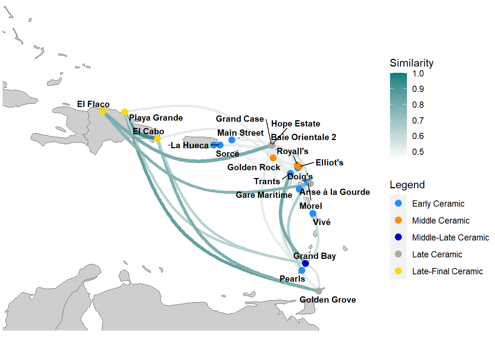
Beyond this global analysis of the distribution of all raw materials based on the similarity of their representation in sites, which allows for a direct comparison with the chronological distribution previously established, it is also possible to study simply the geographic distribution of each raw material. To do so, I extracted data from the GIS created from the database for each of the most represented raw materials and for some materials worthy of discussion. I intentionally omitted doubtful determinations, materials identified in only one site, and very general determinations such as “volcanic rock”. This leaves eight widely spread materials: amethyst, calcite, carnelian, rock crystal, diorite, nephrite, turquoise, and serpentine (Figure 26 A, B, C, D, E, F and Figure 27 A, B). I also represented the distribution of limestone and five other green materials, namely malachite, sudoite, jadeite/jadeitite, paragonite, and pumpellyite (Figure 26 B and Figure 27 C, D, E, F). The maps of the most common materials clearly show a homogeneous distribution of all materials on the scale of the Antillean arc. Note simply the distribution of calcite and diorite, which extends to the Dominican Republic, due to the presence of recent and final Ceramic sites that have been unearthed there. These maps thus once again demonstrate the very high geographical homogeneity of the materials used in lapidary production during the Ceramic Age in the Antilles, with the only notable exception being the distinction of the Dominican Republic sites. As for the rarer materials, I chose to represent six of them here, for various reasons. First of all, I find it interesting to note the distribution of limestone adornment elements, which are only identified in the northern part of the Lesser Antilles, and particularly on limestone islands. This distribution clearly shows the relation between lapidary production and archaeological sites’ substrate and therefore, very probably, a local production of these elements, with the most easily available material, to supplement, no doubt, the materials desired in terms of color, brilliance, hardness, etc. The second interesting material is malachite. This green mineral, rather easily recognizable to the naked eye, has been identified only in the northern part of the Lesser Antilles. If no precise source for this gemstone is known in the region, it seems quite possible that it is also local, according to a mode of reasoning similar to that developed for limestone. Poor-quality sources of malachite are mentioned in Puerto Rico (Rodriguez 1993) and Antigua (Murphy et al. 2000), and may suggest, perhaps, sources of better quality, of low volume, unknown to archaeologists. The map representing the distribution of jadeite and jadeitite, two terms used for the same material (one is the name of the mineral, the other the name of the rock essentially composed of this mineral), is interesting in another way, as are those concerning sudoite, paragonite, and pumpellyite. These three maps highlight more the history of the sciences concerning the study of stone adornments in the Antilles than actual distributions. For jadeite/jadeitite, it is mainly used as synonyms for greenstones by some researchers that have unfortunately never been confirmed by analyses. While it is not ruled out that this material was used for the production of pendants, it would still be very curious if this had not been highlighted by a single study integrating mineralogical characterizations, such as those published for Antigua (Murphy et al. 2000) or three French islands (Queffelec et al. 2020, 2018; Queffelec 2022).
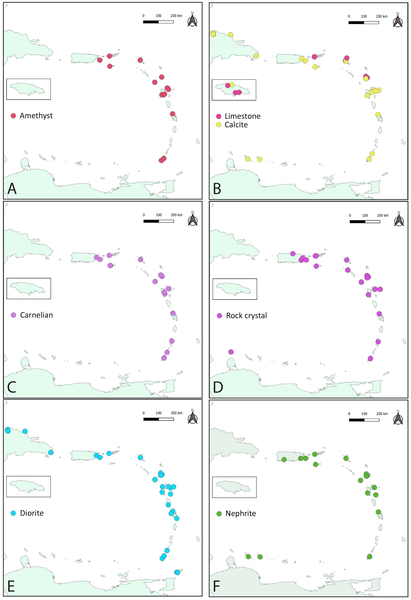
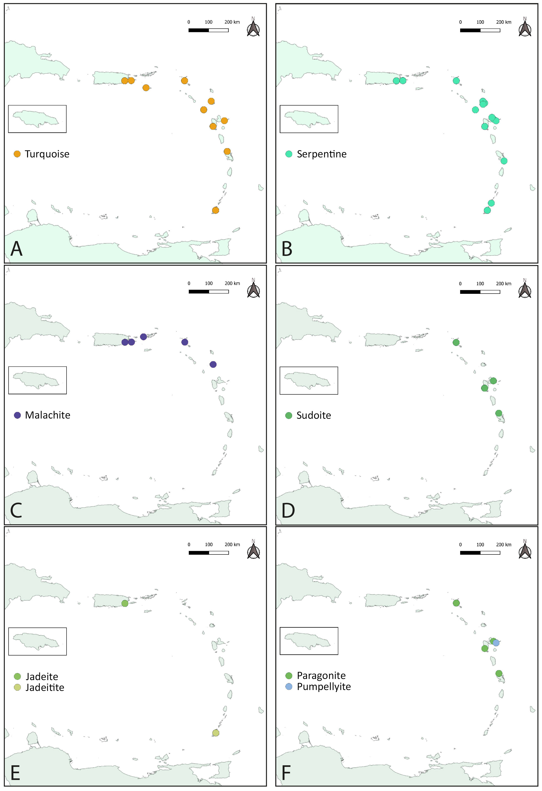
Distribution of types
The most abundant objects, beads, are distributed ubiquitously, since almost all the inventoried sites present this type of object (Figure 28 A). The most common types of beads are also evenly distributed in the Caribbean islands, even for slightly rarer types such as bi-conical or plano-convex beads (Figure 28 B-F). As for pendants, it can be noted that they are also evenly distributed in the Lesser Antilles and Puerto Rico (Figure 29). Regarding the Greater Antilles, it should be noted that although sites that have yielded pendants are present, they are not the most common sub-types (geometric, zoomorphic). For Jamaica in particular, this is due to a lack of information, as pendants are not described at all except for their raw material (Roobol and Lee 1976). For the Dominican Republic sites, the link between the objects studied and the sites is not feasible, even when scrutinizing the supplementary information, so they cannot be integrated into the database. Finally, the raw material fragments are homogeneously recovered from archaeological sites too (Figure 30).The degree of precision of the information on the shapes that these fragments take in the sites is not always very high, and many of them are simply indicated as being raw material or elements of the operational chain waste, but there is still a significant number of crystals mentioned. The presence of flakes is not so rare, and it is therefore likely that the initial stages of the production of these beads, which produce flakes, could have occurred on most sites, even if some sites far surpass others in terms of raw material fragments or preforms, such as Trants and Golden Grove (Crock and Bartone 1998; Mones 2007).
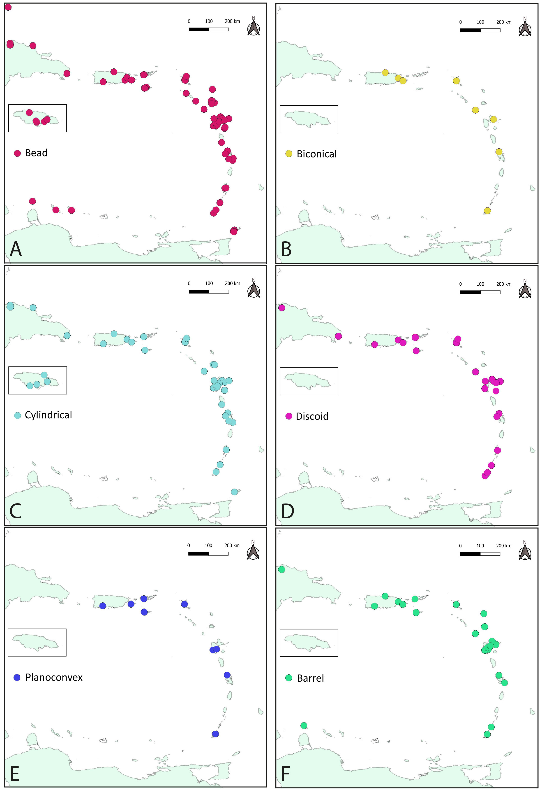
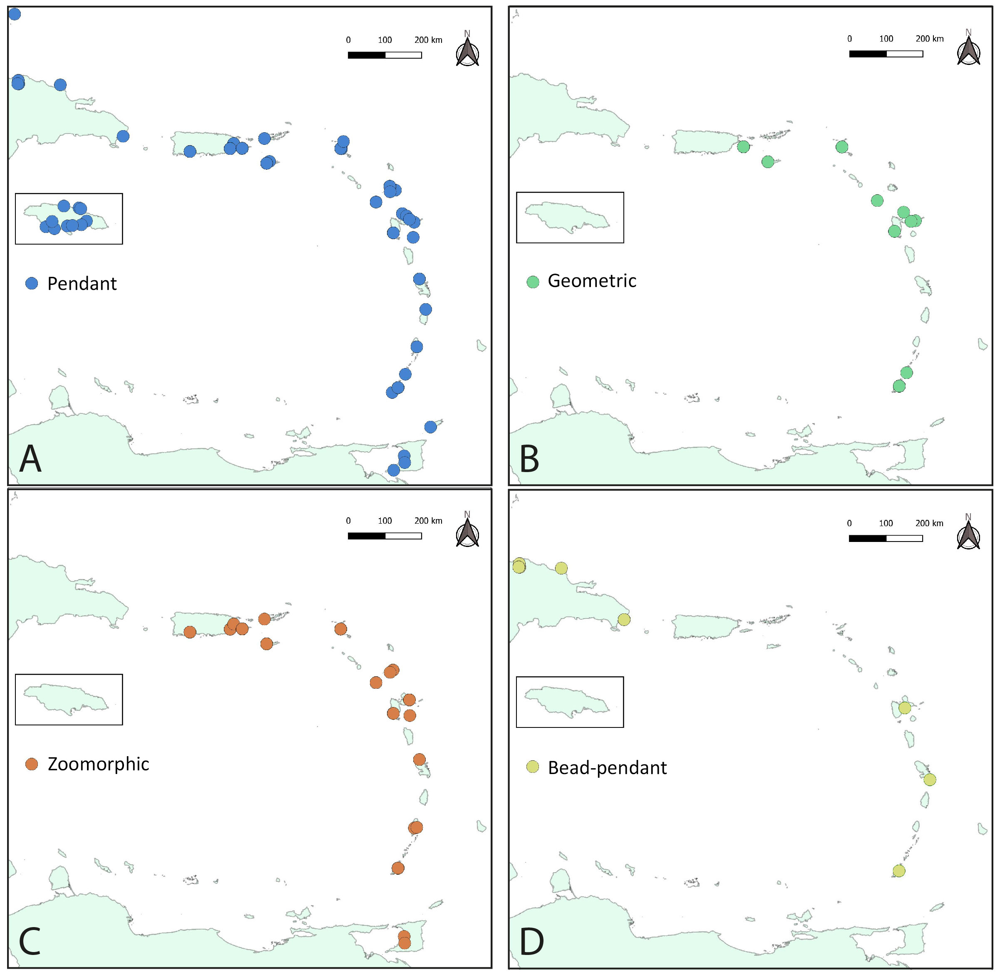
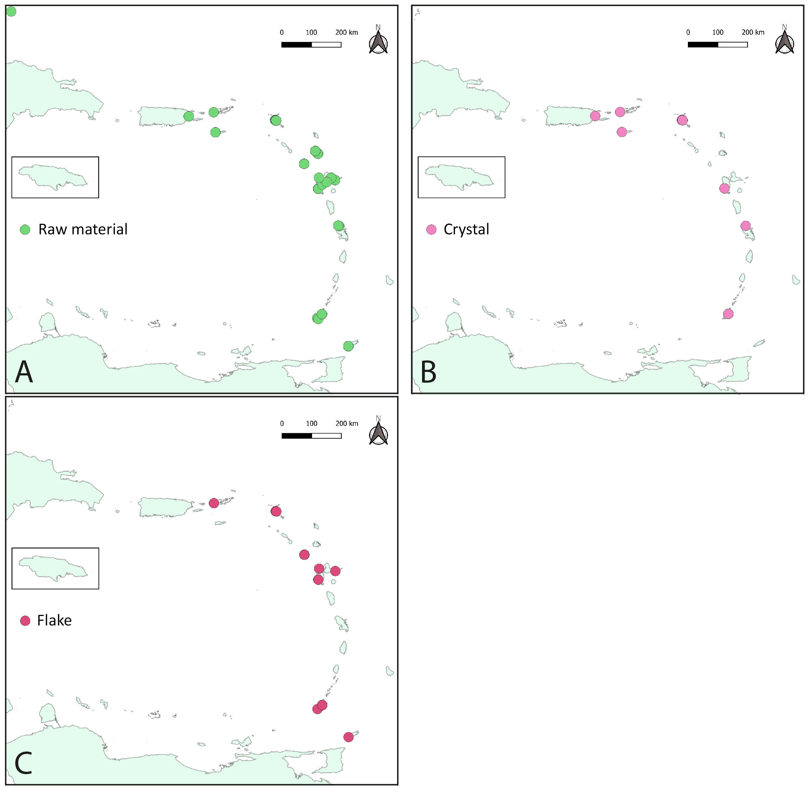
For objects of more particular shapes, such as pendants, I think it is interesting to represent a large number of them, as this has never been done before, while preserving their relative positions as much as possible (Figure 31, Figure 32, Figure 33). Unfortunately, for the sake of readability, it is not possible to maintain the respective scales of the artifacts, but these elements can be accessed to scale in the online database (Queffelec, Fouéré, and Caverne 2021). These figures allow us to visualize, thanks to the inventory work carried out, remarkable similarities between some archaeological objects found on very distant islands. Within zoomorphic pendants in the form of frogs, flat or round, usually attributed to the Cedrosan Saladoid, exceptional similarities in shape are noted, highlighted by frames of the same color (Figure 31). These particularly similar greenstone decorative elements are sometimes separated by thousands of kilometers, for example, very similar objects have been found in Grenada and Puerto Rico, at both ends of the Antillean arc. As for the small zoomorphic pendants, called “segmented frogs” and traditionally attributed to the Huecan Saladoid sub-series, since more than a thousand of them were found in the Sorcé-La Hueca site (VI-02), striking similarities are also noted that extend beyond purely Huecan Saladoid sites (Figure 32). In particular, some similar productions have been found in Pearls (GR-01) (Falci, Knaf, et al. 2020), at the very southern tip of the archipelago, where Huecan Saladoid is not usually recognized in ceramic production, although D. Bonnissent (2013) includes it in the Saladoide Huecan diffusion area based on the work of R. P. Bullen (1964) and R. P. Bullen and A. K. Bullen (1973). A more recent re-evaluation of the site collections confirms that the attribution of Huecan Saladoid to certain levels of Pearls should not be considered (Hanna 2019, Annex A.2 and footnote no. 10).It is also interesting to mention that this category of pendants is not only made of green stones, unlike the previous one. At Sorcé-La Hueca (VI-02), a wide variety of materials seems to be used, although it is not possible to know exactly which ones based on the published study, while the use of calcite to produce several of these objects is observed at Hope Estate (SM-02). Finally, it is worth noting the strong resemblance between the two axe-shaped pendants, one from Gare Maritime (GD-01) and the other from Pearls (GR-01) (Figure 33).
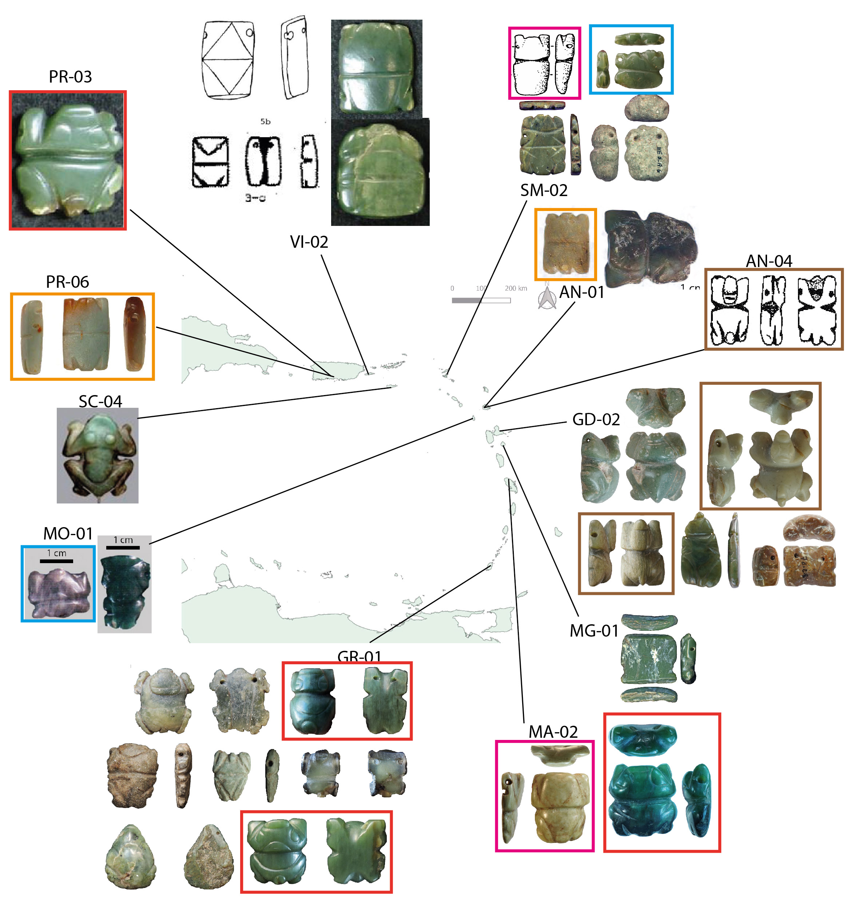
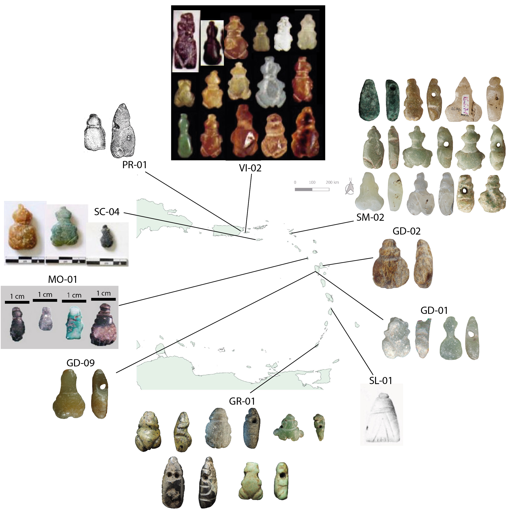
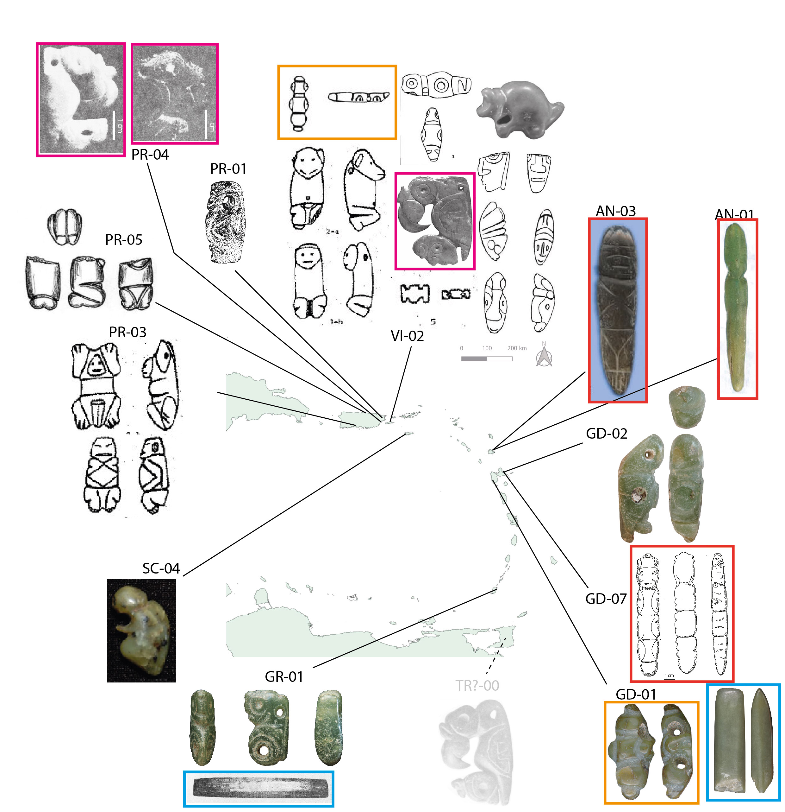
Discussion
Temporal or spatial distinction of lapidary production
Despite the many limitations associated with the archaeological record of the Caribbean islands, it is possible to demonstrate, through the use of a database that is as comprehensive as possible, that the lithic productions of the pre-colonial period are very different between the Early Ceramic and the more recent periods. Whether it is the raw materials used, the types of objects produced, or even the more precise combinations of raw materials and types of objects, the Early Ceramic is clearly distinguished, both in terms of diversity and similarity. The sites of the Early Ceramic are more diversified in terms of richness, but also when diversity is evaluated more globally through diversity profiles. I have also been able to show that the lower diversity of the Late Ceramic and Final Ceramic sites is not solely due to their smaller populations, but is indeed due to a choice made by the inhabitants of the Caribbean islands during these periods. As for the similarity of the lithic object collections, it is clear that it is the periodization and not the geographical location that groups the sites. I have been able to demonstrate this in various ways, through seriation analyses, AFC or network analyses. Within the Early Ceramic sites, these analyses have also highlighted a subgroup consisting of sites that provide Huecan Saladoid ceramics, among which is generally found the Sorcé site, even though it is attributed based on its ceramic productions to the Cedrosan sub-series. Its extreme geographical proximity to the La Hueca site (the two sites are next to each other) could explain this phenomenon. These sites are mainly characterized by a significant use of green rocks and are similar to each other to a lesser extent in terms of typology, although many of them have delivered a significant number of zoomorphic pendants. This differentiation, which has been observed by archaeologists for many years, is thus confirmed here by robust analyses based on more comprehensive data than ever before. Within the period during which Saladoid ceramic productions developed, some authors have noted a strong distinction between the Early Cedrosan Saladoid and the Middle-Late Cedrosan Saladoid, or at least between the periods represented by these ceramic ensembles, which are the Early Ceramic and the Middle Ceramic. Several authors highlight differences in the lifestyle of the agro-ceramicists between these two periods, with the Amerindians having colonized a large part of the Caribbean archipelago, expanding the types of environments occupied and the types of ceramics produced, in parallel with a visible demographic increase as evidenced by the increase in the number of archaeological sites (Hofman 2013; Curet 2005; Keegan and Hofman 2017; Crock and Petersen 2004). Unfortunately, the lapidary production during this period is quite poorly represented with only few sites, which could already indicate a loss of importance of this production during this period, since with the increase in the number of archaeological sites, one would expect to also inventory more stone adornments. The Middle Ceramic sites that have been able to integrate the data sets used in the statistical analyses, especially Elliot’s and Royall’s, show in most of the analyses based on raw materials a relatively intermediate position between Early Ceramic sites and more recent sites, when they are rather similar to Early Ceramic sites in terms of typology. As for their diversity, they are also in an intermediate position in terms of raw materials, but clearly similar to recent sites in terms of typological diversity. Taking into account this loss of diversity already initiated from the Middle Ceramic, the most obvious break between Saladoid tradition and more recent periods is mainly due to the raw materials used. The Late-Final Ceramic sites can be grouped together, in opposition to the older sites. The use of so-called exotic materials almost completely stops, and only three materials then provide the vast majority of production supports: calcite, diorite, and carnelian. Stylistically, forms associated with green materials are also abandoned: pendants in general and zoomorphic pendants in green rock in particular now represent only a very limited portion of stone jewelry. The cultural evolution of Middle Ceramic societies towards Late Ceramic societies, interpreted as internal to the Caribbean arc and not linked to a new migration based on ceramic remains (e.g. Hofman 2013; Keegan and Hofman 2017) and genomic analyses (Nägele et al. 2020; Fernandes et al. 2020), has apparently also been at work regarding lapidary production. While the homogeneity of the Early Ceramic period can be emphasized, for these more recent periods, it is possible to distinguish two two very distinct groups of sites: those who use primarily calcite jewelry and those who use jewelry made of diorite and carnelian.
If the evolution of lapidary productions is clear in the temporal dimension, it must be noted that, regardless of the period considered, no geographical difference is observed. Indeed, strong links between sites, as visible through network analyses for example, show that they do not correspond to geographical proximity once placed on a map. The Late/Final Ceramic period sites on Hispaniola, for example, integrate the two visible subgroups of this period and mix with the sites of Late Ceramic on St. Martin, Guadeloupe, or Tobago. The older sites themselves can be very strongly similar regardless of the distance that separates them, and from a more stylistic point of view, very similar zoomorphic pendants, barrel-shaped diorite beads, plano-convex beads made of turquoise, and cylindrical beads in rock crystal and amethyst are found throughout the Caribbean islands.
This homogeneity implies regular contacts between human groups inhabiting the Antillean arc during this period, while the origin of at least some of the materials implies direct or indirect contacts with the inhabitants of the American continent. For many human societies, personal ornaments carry a strong symbolic charge, allowing individuals to assert their social status (see introduction). Maintaining homogeneity in these ornaments is therefore necessary to continue understanding these codes on a large geographic scale, such as this long archipelago. The function of adornment, which is very difficult to approach archaeologically unless there are direct associations between skeletons and artifacts, has been very little discussed in the literature, probably due to the fact that these objects are mainly found in midden deposits without association with their wearer. Only A. Boomert (2001) hypothesizes that the use of these adornments was coded by gender, parallel to the gendered classification of animals in the cosmology of their wearers. In this cosmogenic vision, based on knowledge of the inhabitants of the Antilles and the Amazon at the time of contact, frogs, caterpillars, manatees, and turtles would be feminine attributes, while jaguars, dogs, sharks, and vultures would be masculine. It is probably not possible to directly transfer this knowledge of the Amazonian inhabitants in the 16th century to the populations of the Early Ceramic period, but one can imagine different adornment codes according to gender, life stages, and social status, which could require regional homogeneity to remain understandable on a large scale. This strong homogeneity, also evidenced in ceramic production, is interpreted by several authors as a characteristic of pioneering groups, compared to the first inhabitants of Pacific islands in terms of lithic raw material such as obsidian or ceramic styles (e.g. Earle and Spriggs 2015; Spriggs 2020; Shaw et al. 2022; Kirch 2017). The significant exchanges that can be imagined based on the widespread distribution of this most symbolic material tradition represented by lapidary production would then have everything to do with maintaining strong connections between isolated groups to minimize risks in a new and dangerous environment. The Caribbean islands are indeed subject to significant natural climatic and geological hazards such as hurricanes, droughts, volcanic eruptions, tsunamis, or epidemics, as well as social hazards such as conflicts. The sense of belonging to the same extended social group, in difficult or even dangerous conditions of colonizing new spaces, would then be an advantage in order to multiply the possibilities of mutual aid in case of problems (Keegan and Hofman 2017).
The origin of this lapidary production
The most widely discussed topic among Caribbean archaeologists through the diverse lapidary productions of the Early Ceramic period is undoubtedly the distribution of these objects and the origin of the raw materials used for their production. The interpretations are mostly similar, indicating origins from all around the Caribbean islands as well as the northern coast of South America (e.g. Rodriguez 1993; Hofman et al. 2007; Cody 1993). Table 7 summarizes the different proposals of archaeologists in the region regarding the origin of the most common materials. Some studies mainly cite old geological literature or personal communications from geologists (Cody 1993; Rodriguez 1993; Murphy 1999), while most recent studies only repeat these hypothetical attributions. These two categories of work ultimately provide very little concrete evidence, and unfortunately, I do not currently believe it is possible to go further in a reasonable way. As D. Watters (Watters 1997) wrote: “Archaeologists tend to favour lowland South American sources because of undoubted linguistic and artifactual evidence linking the Caribbean’s early Ceramic Age colonizers with that region, but empirical evidence of such sources is largely lacking”. Ongoing work on turquoise and diorite will hopefully bear fruit in the coming years (Queffelec et al. 2022; Queffelec 2021), while carnelian could also be a possibility, based on recent work in other parts of the world (Carter and Dussubieux 2016; Theunissen, Grave, and Bailey 2000; Insoll et al. 2004). Hypothesis will have to be tested both with fieldwork and analytical programs about the origin of sudoite (Queffelec et al. 2021) and the origin of nephrite (Acevedo Gómez et al. 2018).
Code
proposed_provenance=read.csv(file = "Table_provenances.csv")
kable(proposed_provenance,col.names = gsub("[_]", " ", names(proposed_provenance))) %>%
collapse_rows(columns = 1) %>%
row_spec(0, align = "c") %>%
kable_styling(latex_options = "hold_position")| Gemstone | Proposed origin | Bibliography |
|---|---|---|
| Amethyst | Brazil | Cody 1991 |
| Amethyst | South America | Rodriguez 1993 ; Murphy 1999 |
| Amethyst | Martinique | Hofman 2007 |
| Amethyst | Not Martinique | Queffelec et al. 2018 |
| Aventurine | Brazil | Rodriguez 1993 |
| Barityne | Antigua | Murphy 1999 ; Hofman et al. 2007 |
| Calcite | Guadeloupe, Antigua, St. Martin, Anguilla, Puerto Rico | Hofman et al. 2007 |
| Carnelian | Dominican Republic | Cody 1993 |
| Carnelian | South America or Greater Antilles | Crock & Bartone 1998 |
| Carnelian | Unknown | Murphy 1999 |
| Carnelian | Antigua | Murphy et al. 2000 |
| Rock crystal | Antigua | Murphy 1999 |
| Rock crystal | Puerto Rico, St. Martin, Antigua, Martinique and other volcanic islands | Hofman et al. 2007 |
| Diorite | St. Martin | Murphy 1999 |
| Diorite | Tobago | Mones 2007 |
| Malachite | Puerto Rico, South America | Rodriguez 1993 |
| Malachite | Unknown | Murphy 1999 |
| Malachite | Antigua | Murphy 2000 |
| Nephrite | Brazil | Cody 1991, 1993 |
| Nephrite | South and Central America | Rodriguez 1993 ; Murphy 1999 |
| Nephrite | South America | Hofman et al. 2007 |
| Serpentine | Greater Antilles and Venezuela | Cody 1993 |
| Serpentine | Puerto Rico | Rodriguez 1993 |
| Serpentine | Coastal Venezuela, Puerto Rico | Murphy 1999 ; Hofman et al. 2007 |
| Sudoite | Panama, Colombia, Hispaniola, Cuba | Queffelec et al. 2021 |
| Turquoise | Northern Chile and Eastern Brazil | Cody 1993 |
| Turquoise | Brazil, Peru, Others | Rodriguez 1993 |
| Turquoise | South America | Murphy 1999 ; Hofman et al. 2007 |
One aspect that remains unclear about the Early Ceramic period’s production of lapidary adornments, in addition to the source of raw materials, is the origin of the cultural tradition and technical expertise. Caribbean archaeologists largely agree that the use of raw materials and the evolution of stylistic frog-shaped pendants suggest a desire to maintain ties with the inhabitants of the continent. Yet, while the link between ceramic productions has been established since the 1950s (e.g. Cruxent and Rouse 1958; Rouse and Cruxent 1963; Rostain 2008; Bérard 2013), and has recently been confirmed by genetic studies (Nägele et al. 2020; Fernandes et al. 2020), the production of lapidary adornments do not show such an obvious link, to say the least.
When searching through general literature on the archaeology of northern South America and specifically the Orinoco Basin, references to stone adornments are rare, and some general articles or book chapters don’t even mention them (Navarrete 2008; Gassón 2002; Arroyo Kalin et al. 2019; Versteeg 2008). This suggests that stone adornments were not a major element of material culture for the inhabitants of this region during the Ceramic Age, unlike the Early Ceramic period in the Caribbean, where all general writings mention them. The rare mentions of lapidary production mostly concern pendants: muiraquitas and winged plaque pendants or bat-shaped pendants (“placas aladas” in Spanish). However, muiraquitas on the continent are later than in Cedrosan Saladoid or Huecan occupations in the Caribbean islands, as they are found in Kwatta, Konduri or Santarem contexts, which are integrated into the Arauquinoid series (ca. 650-1250/1500 AD) (Rostain 2008; Boomert 1987). Their use persisted until colonial periods (see Boomert 1987, 36–40 for numerous examples). The production of beads and pendants in the Santarém or Guyana region is extremely similar to that of the Early Ceramic period in the Caribbean islands (Barata 1954; Roth 1944), but they are indeed later. The distribution of winged plaques and their production workshops is quite different: they are found from Costa Rica to Venezuela, passing through Panama and Colombia and are mainly found in the early centuries AD (Gassón 2002; Acevedo Gómez et al. 2018; Falci et al. 2017; Wagner and Schubert 1972). Some examples have been found in earlier contexts, in the first centuries before our era, in Costa Rica and Colombia (Acevedo Gómez et al. 2018). The stone beads are even rarer and also later (Spencer and Redmond 1992; Lozada Mendieta, Oliver, and Riris 2016), or completely absent from texts (Gassón 2002; Arroyo Kalin et al. 2019; Versteeg 2008). When looking specifically at the elements found in Saladoid contexts on the continent, small lapidary adornment productions can be found, although they are difficult to find. For example, at the Corozal site (Roosevelt 1980), even though they mainly come from non-Saladoid levels, or at the Saladero site where cylindrical stone beads are mentioned: “En Saladero, por ejemplo, solo encontramos restos de topi, lascas calcedonia, cuentas cilindricas de piedra y un punzon de hueso. No existen objetos ceremoniales.” (p. 153 Rouse and Cruxent 1963). After a request to the Peabody Museum at Yale University (R. Colten, pers. comm. 2022), it appears that their collections from major Saladoide sites such as Ronquín or Saladero are very poor in this regard. The Ronquín site, in fact, did not yield any stone beads, while all of the stone beads in their Saladero collection amount to five beads, four of which are made from a black and white material resembling diorite, the fifth resembling volcanic rock (Figure 34). These objects are very rare and currently there is no evidence attesting to a great diversity of production in terms of raw materials or forms: where are the continental Saladoid pendants or the amethyst beads? A more in-depth bibliographic research on these anciently excavated, studied, and published sites, which is difficult to conduct online, would require a significant effort to possibly find some images of lapidary productions, but that is out of the scope of this work.

Therefore, it is clear that the production of stone beads and pendants by the Saladoid ceramicists in South America had nothing to do with the one of groups in the Antillean archipelago, either in terms of typology, variety of raw materials, or even simply in quantity found in the sites. On the contrary, one could consider that it is the Isthmo-Colombian region that should be considered, and the Nahuange traditions (Colombia), Middle Zoned Bichrome, La Montana, or El Bosque (Costa Rica). Indeed, several arguments could be used to connect antillean and isthmo-colombian productions in a stronger way than antillean and lower Orinoco ones:
- presence of contemporaneous lapidary production in this region as compared with Early Ceramic sites in the Caribbean islands (Jones 1998; Rodríguez Ramos 2013; Kuboyama 2022; Fonseca Zamora and Scaglion 1978),
- stylistic proximity for pendants production, such as vultures/condors, bats, frogs for the Huecan Saladoid (Rodríguez Ramos 2011b, 2011a; Cody 1993; Narganes Storde 1999; Fonseca Zamora and Scaglion 1978 and Figure 35),
- similar raw materials: amethyst, serpentine, agate, chalcedony, rock crystal, paragonite, nephrite (Guerrero 1998; Rodríguez Ramos 2011a; Hernández-Murillo et al. 2021),
- presence of nephrite in Colombia (Acevedo Gómez et al. 2018) and potential presence of sudoite in the ophiolites (Queffelec et al. 2021).
Furthermore, there are additional factors to consider in relation to other aspects of material culture. Recent analyses suggest that the jadeite utilized for axe production partly came from Guatemala (Knaf et al. 2021), a hypothesis previously proposed by R. Rodriguez-Ramos (2011b) based on the observation that there is no evidence of occupation as early as the beginning of the Early Ceramic period on the islands of Hispaniola and Cuba, which are the other potential sources of jadeite. Nevertheless, jadeite axes have been discovered in these early contexts. To support this hypothesis, R. Rodriguez-Ramos (2011b) also examines the typology of the axes, highlighting the similarity between the plano-convex shapes found in Porto Rico and those of Costa Rica. Additionally, the presence of guanin (only one fragment found at the Maisabel site), mother-of-pearl elements, and other indicators, such as coastal lifestyles, certain plant introductions, and dog burials, all suggest proximity to the Isthmo-Colombian region. This interpretive model, which is not widely accepted in the Caribbean archaeology community, emphasizes the Huecoid ceramic series over the Huecan Saladoid sub-series also in terms of ceramic forms and decorations (Rodríguez Ramos 2013).
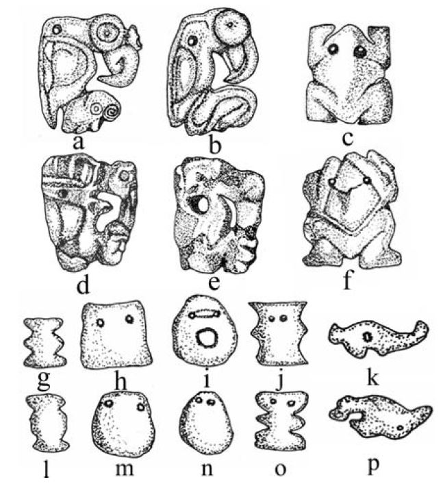
As it seems extremely difficult to challenge the solid knowledge gained in the fields of ceramics and genetics through the prism of stone adornment objects, specific hypotheses are probably needed for this particular part of material culture, which was already highly developed from the earliest ceramic age occupations in the Caribbean. One such hypothesis posits that the existing connections between the inhabitants of the Archaic Age Antilles and those of the Isthmo-Colombian region allowed the new arrivals with Saladoid ceramics to create a novel means of recognition, thereby strengthening their bonds during the precarious period of archipelago colonization. Evidence suggests that lapidary adornment items began production in Costa Rica with the Early Chiefdom Society around 300 BC (Kuboyama 2022), thus contemporaneously with the oldest Huecan Saladoid sites. These new contacts established with the inhabitants of present-day Costa Rica may also have influenced the ceramic productions of some of the new arrivals, resulting in a distinction identified today as the Huecan Saladoid or the Huecoid, as proposed by researchers. Other groups from the continent may have concurrently integrated this new production of stone adornment objects while maintaining their ceramic tradition, as is known today in the Cedrosan Saladoid.
Conclusion
With this work, knowledge of Amerindian lapidary productions in the Caribbean islands has been greatly updated. The data gathered through direct studies and a substantial inventory from scientific literature allowed to create a database of over 8000 objects distributed across more than 80 archaeological sites, providing a robust approach to test the intuitions of Caribbean archaeologists. The use of ecological methodologies confirmed the greater diversity of Early Ceramic assemblages, in terms of raw materials and types of objects, compared to later periods, without this being attributed to a bias arising from variable archaeological collection sizes. Several methods also highlighted that similarities in raw materials as well as typology were linked to site periodization rather than geographic location. The homogeneity of Early Ceramic lapidary productions and of the different archaeological sites in such a network of similarities, was also highlighted, while the specificities of productions from sites attributed to Huecan Saladoid were emphasized. Based on this specific archaeological record, more recent sites distinguished themselves into two groups. In this Early Ceramic - Late/Final Ceramic dichotomy, the lapidary productions of the Middle Ceramic are often in an intermediate position.
Finally, this work highlights the significant similarities between the Antillean arch and the Isthmo-Colombian region in the Ceramic Age in terms of lapidary ornament production, as well as the absence of an evident link on this subject with the original Saladoid groups of the lower Orinoco valley. The exchange network of the Early Ceramic period probably included the Isthmo-Colombian region, and it is not easy to interpret the production of an exceptionally diverse ornamentation that used exotic materials among these pioneering groups as a desire to maintain a link with their region of origin, which was ultimately so poor in lapidary ornaments. The archaeological record rather highlights a desire to develop their own ethnic codes, possibly related to a new social organization, participating in the development of a sense of unity beneficial to the colonization of the archipelago.
Acknowledgments
This research was funded by the Direction des Affaires Culturelles de Guadeloupe and the Guadeloupe Regional Council for the period 2016-2019, and by the Direction des Affaires Culturelles de Martinique in 2018. This study received financial support from the French government in the framework of the University of Bordeaux’s IdEx “Investments for the Future” program / GPR “Human Past”.